.
Podstawy dla początkujących
04-08-2022
|
Wstęp . Kamerki astrofotograficzne stanowią wspaniałe narzędzie w astronomii amatorskiej, jednak wymagają specyficznej wiedzy, którą warto posiadać. Rozumiejąc ideę Unity Gain, gdy wiesz, czemu służy Offset, dlaczego potrzebny nam odpowiednio duży ADC, dużo łatwiej jest zajmować się astrofotografią i osiągać dobre wyniki. Zamiast w rozterce stosować ten czy inny polecany parametr, lepiej zrozumieć rządzące kamerkami zależności i świadomie podejmować samodzielne decyzje. Temu służy niniejszy opis i mam nadzieję, że wielu z Was coś z niego dla siebie wyniesie :) Opisując zagadnienia, będę unikał profesjonalnego słownictwa, ponieważ wiem z doświadczenia, że bardzo szybko pogubicie się w temacie, dlatego posługując się każdorazowo nazewnictwem bezpośrednio opisującym zagadnienie, mam pewność, że cały czas wiecie, o czym mówimy :) Moim celem nadrzędnym jest umożliwić początkującym zrozumienie podstawowych zagadnień z dziedziny, a nie stworzyć kolejne semi-naukowe opracowanie. Gdy zrozumiecie opisane w prosty sposób podstawowe zasady, z czasem głodni wiedzy, zdobędziecie wiedzę inżynieryjną :) Wiedza, w miarę możliwości, będzie stopniowana w stosownej kolejności, powoli wtajemniczając Was w kolejne zagadnienia. Czasami dla lepszego zrozumienia, będę to samo zagadnienie opisywał z różnych stron, w różny sposób, niejako się powtarzając. W przykładach będziemy bazować na małych wartościach, aby było Wam łatwiej zrozumieć zagadnienia, naturalnie sprzęt operuje wielkimi parametrami, ale rysowanie i liczenie 12356 kresek z 65536 przekracza nasze możliwości percepcji, więc będziemy pracować na 16 kreskach z 32 :) . Ponieważ opis zawiera wiele animacji, które dla wygody analizy często są dość powolne, dla lepszego odróżnienia ich od grafiki statycznej, zostały oznaczone napisem | animacja GIF | Dodatkowo z uwagi na fakt, iż niektóre animacje są naprawdę długie, a inne znacznie krótsze, oznaczyłem także ilość klatek, celem lepszego rozpoznania długości sekwencji. . Dla klarowności prezentowanych przykładów postanowiłem przyjąć czerń jako pierwszy poziom skali ADC, to do inżynierów, Wy uczący się z czasem zrozumiecie to zdanie, a to będzie dobry znak :) Próba zrobienia tego inaczej, rozbija pary, pełne podziały, grzebiąc intuicyjną prezentację opisywanych zagadnień. Opracowanie podzieliłem na kilka podstawowych działów, kliknij stosowną nazwę, aby zostać przeniesionym do interesującej Cię sekcji. ➤ CCD - CMOS ➤ BUDOWA KAMERKI ➤ SCHEMAT POWSTAWANIA OBRAZU ➤ BITY ➤ STUDNIA PIKSELA ➤ ADC ➤ ADU ➤ GAIN ➤ UNITY GAIN ➤ HISTOGRAM ➤ OFFSET ➤ GAMMA ➤ SZUM ➤ AMP GLOW ➤ MIGAWKA POSTĘPOWA i GLOBALNA ➤ WYDAJNOŚĆ KWANTOWA MATRYCY - QE ➤ MONO / KOLOR - MASKA BAYERA ➤ SKALA - ROZDZIELCZOŚĆ - PLAMKA AIRY'EGO ➤ AKWIZYCJA 8bit - 16bit ➤ ZROZUMIEĆ WYKRES PARAMETRÓW ZWO ASI ➤ DLACZEGO ADC JEDYNIE 12bit A NIE 16bit? ➤ SUG ➤ SKĄD TO ŚWIATŁO ? ➤ APLIKACJA MA ZNACZENIE ! ❚ CCD - CMOS Próbując scharakteryzować współczesne kamerki astrofotograficzne z uwagi na zastosowaną technologię, wyodrębnić możemy dwa podstawowe rodzaje, mianowicie, CCD (ang. Charge Coupled Device) oraz CMOS (ang. Complementary Metal-Oxide-Semiconductor). Pierwotnie, CCD był bardziej dominującą technologią, jednak obecnie z uwagi na swoje zalety, to CMOS przejął rynek obrazowania cyfrowego. Z uwagi na dominację CMOS, produkcji matryc CCD powoli się zaprzestaje. Jedne i drugie przetworniki posiadają swoje wady i zalety. Według niektórych, stary dobry CCD nie ma sobie równych wśród kamerek astrofotograficznych Deep Sky, ale to są wytrawni astrofotografowie, robiący jeden obiekt wiele tygodni, naświetlający pojedyncze klatki po 20-40 minut, super sprzętem, na super montażach, ze zdjęciami końcowymi o walorach nieskazitelnych niczym tafla wody w bezwietrzny dzień :) Jednak decydując się wejść w świat astrofotografii, lepiej zacząć od tańszej kamerki CMOS, nabrać wprawy, aby potem z czasem, przejść na CCD lub CMOS klasy premium. Wiedzieć jednak należy, że: Kamerki CMOS to: - zazwyczaj Amp glow i inne takie tam... - zazwyczaj Migawka postępowa ale i zalety... - możliwość regulacji Gain - możliwość regulacji Offset - możliwość regulacji balansu kolorów przy akwizycji - niski szum odczytu - duża czułość - predyspozycja do Lucky Imaging, short exposures i planet . Kamerki CCD to: - brak regulacji Gain, stosujemy domyślny ustawiony przez producenta kamerki - brak regulacji Offset - brak możliwości regulacji balansu kolorów przy akwizycji - wysokie szumy odczytu - mała czułość - niska przydatność do Lucky Imaging, short exposures i planet . Jeśli kupisz starą dobrą kamerkę CCD, minimalne rozsądne czasy naświetlania DS będą wynosić minuty, zostaw więc kilka tysięcy na montaż potrafiący uciągnąć precyzyjnie teleskop tak długo. Jeśli kupisz CMOS, to już na średnim montażu, zbierając 200 klatek po 20 sekund, zrobisz ciekawe zdjęcia galaktyk i mgławic. Zostawmy jednak ten drażliwy dla wielu temat, własną opinię wypracujecie z czasem :) Musiałem tu, choć słowo o tym zarzucić, skoro o kamerkach mowa, niemniej, wracajmy do meritum wątku, czyli spraw technicznych :) Chociaż gros cech obu rodzajów kamer opisana tutaj jest wspólna, to jednak opracowanie jest skrojone pod kamerki CMOS.  WRÓĆ DO WYKAZU DZIAŁÓW ➤ ❚ BUDOWA KAMERKI Próbując scharakteryzować współczesne kamerki astrofotograficzne z uwagi na ich budowę, wyodrębnić możemy ich dwa podstawowe rodzaje, mianowicie, niechłodzone i chłodzone. Kamerki niechłodzone są dużo prostsze konstrukcyjnie, a przez to tańsze, mniejsze, jednak, za cenę braku zalet kamerek chłodzonych. Kamerki chłodzone są bardziej złożone konstrukcyjnie, a przez to droższe, większe, jednak w imię korzyści wynikających z chłodzenia. KAMERKA ASTROFOTOGRAFICZNA NIECHŁODZONA Astrofotografia cyfrowa bazuje na elektronice i posiada taki feler, że uzyskiwane obrazy zależą od temperatury pracy jej elementów obrazujących. Gdy elementy elektroniczne pracują i płynie przez nie prąd, nagrzewają się, a ich temperatura zależy od ustawień, jakie stosujemy dla danych ekspozycji, oraz od temperatury otoczenia, które odbiera ich ciepło. Wiele wad obrazu cyfrowego minimalizuje się wraz ze spadkiem temperatury elektroniki, a układ wad, oraz ich natężenie, są mocno zależne od temperatury. Posiadając kamerkę niechłodzoną, nie posiadamy możliwości obniżyć jej temperatury, a tym samym, wpłynąć na natężenie wad, dlatego, wykonując dokładnie ten sam obiekt, w identycznych warunkach nieboskłonu, ale w różnej temperaturze otoczenia, uzyskamy różne obrazy końcowe, a to astrofotografii mocno nie służy. Prosta kamerka niechłodzona to mało rozbudowane urządzenie składa się zazwyczaj z obudowy/puszki i elektroniki z matrycą. . 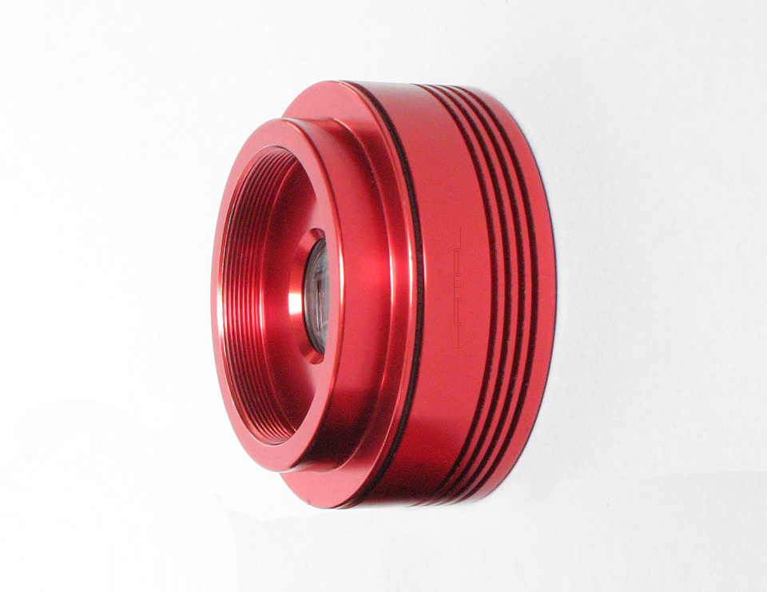 Poniżej przekrój budowy kamerki astrofotograficznej niechłodzonej. . (1) Matryca - odbiera obraz z teleskopu. (2) Płytki elektroniki (3) Okienko matrycy (4) Obudowa . 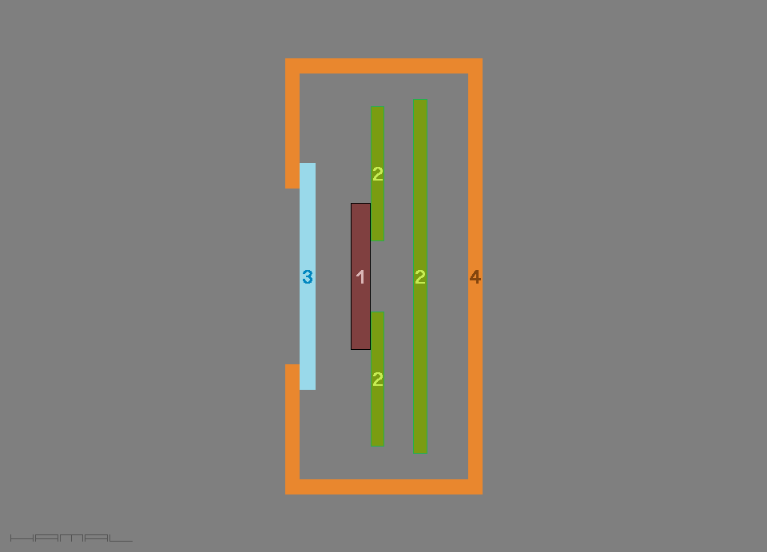 Jak taka kamerka rzeczywiście wygląda w środku możecie zobaczyć TUTAJ KAMERKA ASTROFOTOGRAFICZNA CHŁODZONA Astrofotografia cyfrowa bazuje na elektronice i posiada taki feler, że uzyskiwane obrazy zależą od temperatury pracy jej elementów obrazujących. Gdy elementy elektroniczne pracują i płynie przez nie prąd, nagrzewają się, a ich temperatura zależy od ustawień, jakie stosujemy dla danych ekspozycji, oraz od temperatury otoczenia, które odbiera ich ciepło. Wiele wad obrazu cyfrowego minimalizuje się wraz ze spadkiem temperatury elektroniki, a układ wad, oraz ich natężenie, są od temperatury mocno zależne. Posiadając kamerkę chłodzoną, mamy możliwość obniżenia temperatury jej pracy, a tym samym, możemy wpłynąć na natężenie wad, dlatego, wykonując dokładnie ten sam obiekt, w identycznych warunkach nieboskłonu i identycznych warunkach elektroniki, uzyskamy zbliżone obrazy końcowe, a to astrofotografii bardzo służy. . Kamerki chłodzone dzielimy jednak na dwa podgatunki, czyli obniżające temperaturę elektroniki o daną wartość poniżej temperatury otoczenia, oraz takie, które posiadają możliwość zadania danej temperatury pracy elektroniki, dzięki wbudowanemu układowi, który tej temperatury pilnuje. W pierwszym przypadku, gdy posiadamy model obniżający temperaturę o 20℃ poniżej temperatury otoczenia, a powietrze posiada temperaturę 20℃, to kamerka pracuje w temperaturze ok. 0℃, gdy powietrze posiada temperaturę 0℃, to kamerka pracuje w temperaturze ok. -20℃. W drugim przypadku, gdy nastawimy pracę kamerki na -20℃, to niezależnie, czy na dworze jest 20℃, czy 0℃, elektronika kamerki będzie cały czas pracowała w stałej zadanej temperaturze, tj. -20℃. Dzięki posiadaniu takiej możliwości zebrany materiał będzie zawsze posiadał identyczne wady obrazu, dzięki czemu, w procesie dalszej obróbki, będzie łatwo się ich pozbyć. Kamerka chłodzona to bardziej rozbudowane urządzenie, jej konstrukcja zawiera kilka kluczowych elementów. . 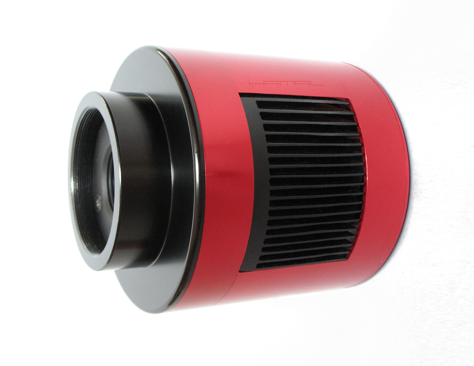 Poniżej przekrój budowy prostej kamerki astrofotograficznej chłodzonej. . (1) Matryca - odbiera obraz z teleskopu. (2) Termopady - specjalne pianki przyklejone do tyłu matrycy, przekazujące jej ciepło do Ogniw Peltiera. (3) Ogniwo Peltiera - element elektroniczny który odbiera niepożądane ciepło matrycy, chłodząc ją. (4) Radiator - żeberkowany blok z aluminium, który odbiera ciepło z ogniwa peltiera, to, które ogniwo odebrało z matrycy, i za pomocą swoich żeberek oddaje owe ciepło do otoczenia. (5) Wentylatorek - Mały wiatraczek, który nawiewem wspomaga studzenie radiatora. . . Koniec piramidki, jednak do kompletu mamy jeszcze: . (6) Nosek kamerki (7) Okienko komory matrycy (8) Obudowa (9) Płytki elektroniki . 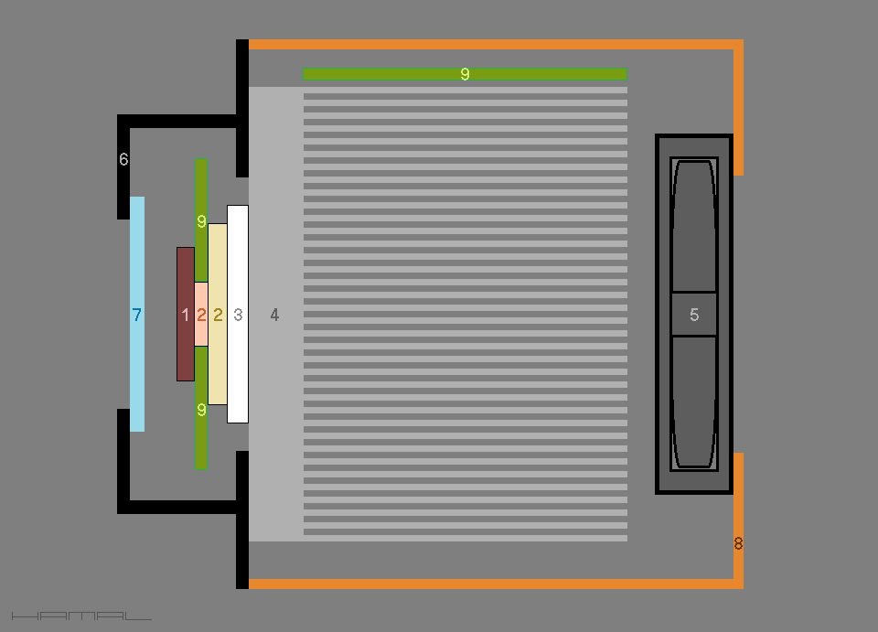 Jak taka kamerka rzeczywiście wygląda w środku możecie zobaczyć TUTAJ Dwa słowa o Ogniwach Peltiera, aby nikt Was nie zaskoczył mówiąc o Two-stage TEC cooling :) Ogniwo Peltiera to dwie ceramiczne płytki z umieszczonymi pomiędzy nimi małymi kosteczkami wykonanymi z odpowiednich substancji. Z takiej płytki wyprowadzone są dwa przewody, do których podłącza się zasilanie, plus i minus. Gdy do takiej płytki podłączymy zasilanie, to zaczyna ona transportować ciepło z jednej strony na drugą, przez co strona, z której ciepło jest zabierane, staje się zimna, a strona, na którą ciepło jest transportowane, staje się gorąca. Naszym zadaniem jest po stronie gorącej zamontować radiator (żeberkowany element skutecznie oddający ciepło), który pozwoli zgromadzone ciepło pobrać i rozproszyć do otoczenia, dzięki czemu zwolni się miejsce na kolejne porcje ciepła sprowadzone przez Ogniwo Peltiera z jego zimnej strony. W ten sposób, gdy matryca kamerki swoją tylną ścianką styka się z tą stroną Ogniwa Peltiera, która pożera ciepło i przesyła na drugą stronę, staje się chłodniejsza, i pracuje w komfortowych warunkach. Two-stage TEC cooling (Thermoelectric) - Dwustopniowe chłodzenie TEC (Termoelektryczne) . Zapanowała moda wśród producentów, aby chwalić się tym, że ich chłodzenie to "Two-stage TEC cooling", czyli jest dwustopniowe. TEC=Termoelektryczne, czyli za pomocą Ogniw Peltiera. . Jak już wspomniałem, Ogniwo Peltiera jedną stroną pożera ciepło i przesyła je na drugą stronę, gdzie trzeba je oddać do otoczenia. To jak dużo ciepła będzie w stanie wyssać zimna strona i jak bardzo zimna dzięki temu się stanie, zależy w dużym stopniu od tego, jaką temperaturę posiada jego ciepła strona. Nawet najlepiej wentylowany radiator przylegający do ciepłej strony Ogniwa Peltiera będzie co najwyżej letni, wymyślono więc, aby dodać tam kolejne Ogniwo Peltiera i sprawić, że po ciepłej stronie pierwszego Ogniwa Peltiera będzie zimno, bo drugie Ogniwo Peltiera wszystko natychmiast poda dalej, wtedy zimna strona pierwszego Ogniwa Peltiera zwariuje z radości, że ma gdzie pchać kolejne porcje ciepła i stanie się jeszcze zimniejsza, a tym samym jeszcze mocniej ochłodzi nam matrycę kamerki. Takie połączenie Ogniw Peltiera nazywa się kaskadowym, można łączyć ze sobą nawet kilka sztuk, pamiętać jednak należy, że im chłodniejsza staje się dzięki temu zimna strona pierwszego Ogniwa Peltiera, tym bardziej gorąca staje się ciepła strona ostatniego Ogniwa Peltiera i tym skuteczniejszy musi być system chłodzenia, bo trzeba całe to przetransportowane ciepło oddać o otoczenia, musimy więc zastosować większy radiator i większy wentylator. Bardziej szczegółowe rozważania na temat Ogniw TUTAJ. Termopady . Są to specjalne pianki posiadające niebywałą zdolność do przenoszenia ciepła. Gdy Ogniwo Peltiera nie może przylegać bezpośrednio do chłodzonego elementu, zachodzi potrzeba wypełnienia tej przestrzeni czymś, co przetransportuje ciepło. Przyjęło się uważać, że nie ma do tego celu nic lepszego niż elementy miedziane, jednak wygodniej jest to poczynić za pomocą czegoś, co jest miękkie i dopasowuje się do lokalizacji, nie dokona swoją twardością uszkodzeń, gdy zostanie mocniej dokręcone, i tym właśnie są Termopady. MATRYCA - SENSOR Sercem każdej kamerki jest Matryca, to ona jest naszym cyfrowym okiem :) . Matryca to światłoczuły element elektroniczny składający się z pikseli, które przechwytując padające na nie fotony, zamieniają je na informację o tym, jaką na gotowym zdjęciu wartość ma wyświetlać dany piksel zdjęcia. Gdy matryca składa się z 600 na 400 aktywnych pikseli, to generuje nam potem zdjęcie na monitorze o rozmiarze, 600 na 400 pikseli. Rozmiar matrycy ma dla nas znaczenie, bo im większą powierzchnię ona posiada, tym więcej nieba obejmie na naszym zdjęciu, ale..., tym trudniej znaleźć sprzęt, który wygeneruje odpowiednio dużą powierzchnię obrazu w wyciągu okularowym pozbawionego wad. Więc im większa matryca, tym droższy teleskop, droższy korektor pola, droższe filtry niezbędne do obsłużenia zadanego pola. Co więcej, gdy zdjęcia zawierają więcej pikseli, to ich obróbka jest bardziej wymagająca, dlatego też, na początek, lepiej nabyć wprawy kamerką z małą lub średnią matrycą, a dopiero z czasem, przesiąść się na coś większego. 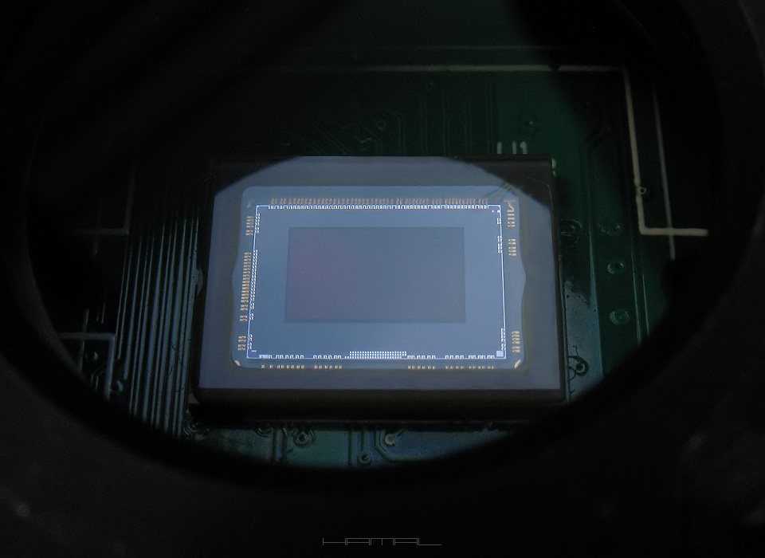 SONY IMX290 - ZWO ASI290MMC PIKSEL Piksel jest pojedynczym, odrębnym, światłoczułym elementem roboczym matrycy, odpowiadającym za generowanie obrazu. Zadaniem piksela jest pochłanianie fotonów i przekształcanie ich na elektrony. Poniższe zdjęcie przedstawia matrycę oraz jej wycinek (zdjęcie z mikroskopu), na którym strzałką oznaczono pojedynczy piksel. . 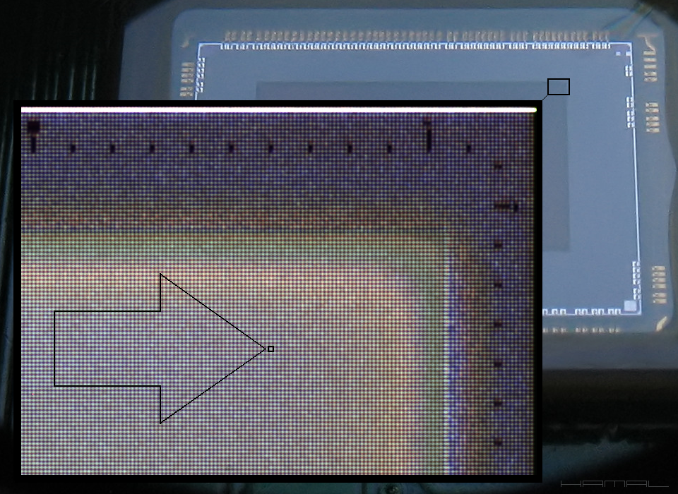 Obrazowanie pikseli wykonane dzięki uprzejmości Mikroskopu z LEGO MK IV dostępnego TUTAJ | SONY IMX290 - ZWO ASI290MMC Piksel to pojedynczy element światłoczuły matrycy, to on potem, na zdjęciu, jest jednym pikselem obrazu. Jego zadaniem jest wyłapywać padające na niego fotony i zamieniać je na informację, ile ich złapał, przy zakończeniu ekspozycji klatki raportuje, jaki poziom osiągnął i stąd wiadomo, jak ma wyglądać dany piksel naszego zdjęcia. Rozmiar piksela matrycy kamerki podawany jest w mikrometrach [µm] choć w środowisku przyjęło się określać go skrótowo mikronem (µ) - ile mikronów mają piksele w twojej kamerce? - 10 mikronów (10µ), a w twojej? - w mojej 7,4 mikrona (7,4µ) 1 Mikrometr [µm] = 0,000001 Metra [m] 1 Mikrometr [µm] = 0,0001 Centymetra [cm] 1 Mikrometr [µm] = 0,001 Milimetra [mm] WRÓĆ DO WYKAZU DZIAŁÓW ➤ ❚ SCHEMAT POWSTAWANIA OBRAZU Fotony przemierzają kosmos, aby ostatecznie dotrzeć do naszej optyki, która skieruje je do naszej kamerki. Zadaniem naszej kamerki, jest obraz składający się ze światła, przekształcić na obraz cyfrowy. W tym celu posiada ona matrycę, która za pomocą pikseli, przekształca fotony na fotoelektrony, te elektrony są wzmacniane na napięcie, które przechodzi przez wzmacniacz (GAIN) i przetwornik analogowo-cyfrowy (ADC), gdzie jest przekształcane na sygnał cyfrowy, w celu wyświetlenia go jako obraz na ekranie.  WRÓĆ DO WYKAZU DZIAŁÓW ➤ ❚ BITY Co nieco o bitach, będzie nam potrzebne w następnym dziale :) Elektronika cyfrowa posługuje się bitami. Bit to najmniejsza jednostka informacji cyfrowej. Bit przybiera dwa stany, 0 lub 1. 1 bit to 2 różne stany, czyli 0 lub 1 2 bit to 4 różne stany, czyli kombinacje 0-0 lub 0-1 lub 1-0 lub 1-1 3 bit to 8 różnych stanów, czyli kombinacje 0-0-0 lub 0-0-1 lub 0-1-0 lub 0-1-1 lub 1-0-0 lub 1-0-1 lub 1-1-0 lub 1-1-1 ... 4 bit to 8 różnych stanów, czyli kombinacje 0-0-0-0 lub 0-0-0-1 lub 0-0-1-0 lub 0-0-1-1 lub 0-1-0-0 lub 0-1-0-1 lub 0-1-1-0 lub 0-1-1-1 lub 1-0-0-0 lub 1-0-0-1 lub 1-0-1-0 lub 1-0-1-1 lub 1-1-0-0 lub 1-1-0-1 lub 1-1-1-0 lub 1-1-1-1 ... 8 bit to 256 różnych stanów, czyli kombinacje 0-0-0-0-0-0-0-0 lub 0-0-0-0-0-0-0-1 lub 0-0-0-0-0-0-1-0 lub 0-0-0-0-0-0-1-1 lub 0-0-0-0-0-1-0-0 itd. itd. aż do 1-1-1-1-1-1-1-1 1 bit to możliwe maksymalnie 2 stany 21 2 bit to możliwe maksymalnie 4 stany 22 (2x2) 3 bit to możliwe maksymalnie 8 stanów 23 (2x2x2) 4 bit to możliwe maksymalnie 16 stanów 24 (2x2x2x2) ... 8 bit to możliwe maksymalnie 256 stanów 28 (2x2x2x2x2x2x2x2) ... 16 bit to możliwe maksymalnie 65536 stanów 216 (2x2x2x2x2x2x2x2x2x2x2x2x2x2x2x2) a im więcej możliwych stanów, tym więcej zróżnicowanych informacji można za ich pomocą opisać/zapisać/przekazać . 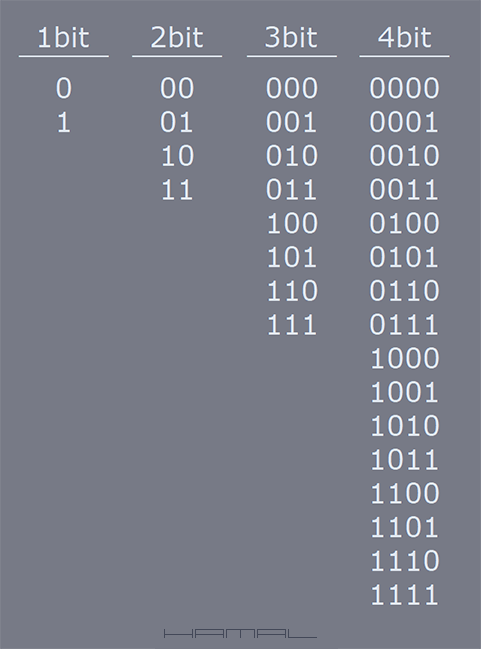 | animacja GIF - 2 klatki |  | animacja GIF - 4 klatki | 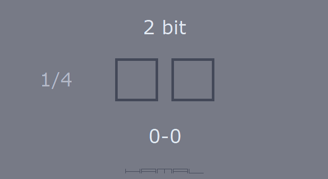 | animacja GIF - 8 klatek | 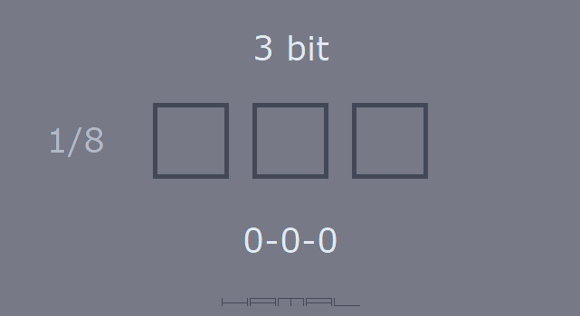 Poniżej zestawienie wartości bit oraz przypisanych im możliwych wartości stanów. 1 bit - 2 2 bit - 4 3 bit - 8 4 bit - 16 5 bit - 32 6 bit - 64 7 bit - 128 8 bit - 256 9 bit - 512 10 bit - 1024 11 bit - 2048 12 bit - 4096 13 bit - 8192 14 bit - 16384 15 bit - 32768 16 bit - 65536 Im większa wartość bit elektroniki kamerki odpowiedzialnej za obrazowanie, tym lepiej, zaraz się o tym przekonacie. Głębia bitowa Jak bity przekładają się na dziedzinę obrazowania? Piksele obrazu w skali szarości o głębi bitowej 1 mogą przyjmować 2 wartości: czerń lub biel. Piksele obrazu w skali szarości o głębi bitowej 2 mogą przyjmować 4 wartości: czerń, 2 odcienie szarości, biel. Piksele obrazu w skali szarości o głębi bitowej 3 mogą przyjmować 8 wartości: czerń, 6 odcieni szarości, biel. Piksele obrazu w skali szarości o głębi bitowej 4 mogą przyjmować 16 wartości: czerń, 14 odcieni szarości, biel. Piksele obrazu w skali szarości o głębi bitowej 8 mogą przyjmować 256 wartości: czerń, 254 odcieni szarości, biel. . 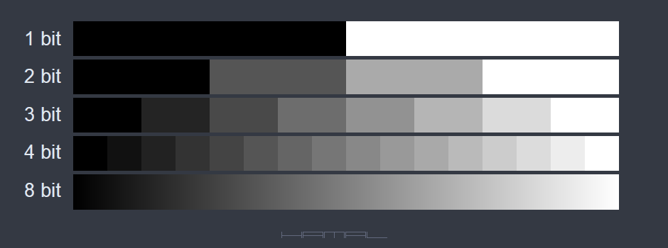 1 bit Patrz poniżej. . Jestem piksel, posiadam zakres pracy 1 bit, czyli 2 różne stany: 0 lub 1 Nie pada na mnie żadne światło, posiadam stan 0 Nadal nie pada na mnie żadne światło, nadal posiadam stan 0 Padła na mnie porcja światła, mój stan z 0 zmienił się na 1 Padła na mnie kolejna porcja światła, ale mój zakres pracy już się wyczerpał, posiadam nadal 1 i kolejna, i kolejna, ale mój zakres pracy się wyczerpał, posiadam nadal 1 To właśnie widzicie poniżej  1 bit to możliwe maksymalnie 2 stany (21) 2 bit Patrz poniżej. . Jestem piksel, posiadam zakres pracy 2 bit, czyli 4 różne stany: 0-0 lub 0-1 lub 1-0 lub 1-1 Nie pada na mnie żadne światło, posiadam stan 0-0 Nadal nie pada na mnie żadne światło, nadal posiadam stan 0-0 Padła na mnie porcja światła, mój stan z 0-0 zmienił się na 0-1 Padła na mnie kolejna porcja światła, mój stan z 0-1 zmienił się na 1-0 Padła na mnie kolejna porcja światła, mój stan z 1-0 zmienił się na 1-1 Padła na mnie kolejna porcja światła, ale mój zakres pracy już się wyczerpał, posiadam nadal 1-1 i kolejna, i kolejna, ale mój zakres pracy się wyczerpał, posiadam nadal 1-1 To właśnie widzicie poniżej 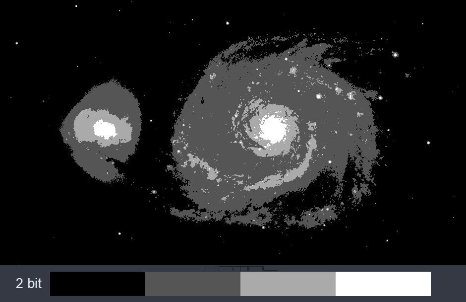 2 bit to możliwe maksymalnie 4 stany (22 czyli 2x2=4) 3 bit Patrz poniżej. . Jestem piksel, posiadam zakres pracy 3 bit, czyli 8 różnych stanów: 0-0-0 lub 0-0-1 lub 0-1-0 lub 0-1-1 lub 1-0-0 lub 1-0-1 lub 1-1-0 lub 1-1-1 Nie pada na mnie żadne światło, posiadam stan 0-0-0 Nadal nie pada na mnie żadne światło, nadal posiadam stan 0-0-0 Padła na mnie porcja światła, mój stan z 0-0-0 zmienił się na 0-0-1 Padła na mnie kolejna porcja światła, mój stan z 0-0-1 zmienił się na 0-1-0 Padła na mnie kolejna porcja światła, mój stan z 0-1-0 zmienił się na 0-1-1 Padła na mnie kolejna porcja światła, mój stan z 0-1-1 zmienił się na 1-0-0 Padła na mnie kolejna porcja światła, mój stan z 1-0-0 zmienił się na 1-0-1 Padła na mnie kolejna porcja światła, mój stan z 1-0-1 zmienił się na 1-1-0 Padła na mnie kolejna porcja światła, mój stan z 1-1-0 zmienił się na 1-1-1 Padła na mnie kolejna porcja światła, ale mój zakres pracy już się wyczerpał, posiadam nadal 1-1-1 i kolejna, i kolejna, ale mój zakres pracy się wyczerpał, posiadam nadal 1-1-1 To właśnie widzicie poniżej 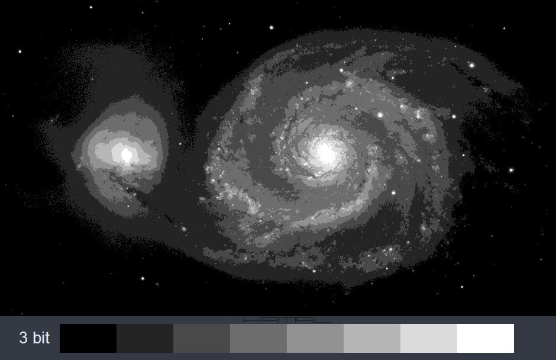 3 bit to możliwe maksymalnie 8 stanów (23 czyli 2x2x2=8) 4 bit . 4 bit to możliwe maksymalnie 16 stanów logicznych (24 czyli 2x2x2x2=16) Ale nie wierzmy na słowo! Policzmy! | crop-zoom 4 bit 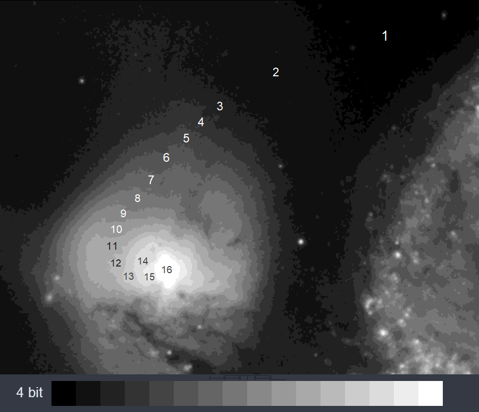 Zgadaza się ! :) 4 bit to możliwe maksymalnie 16 stanów (24 czyli 2x2x2x2=16) 8 bit . 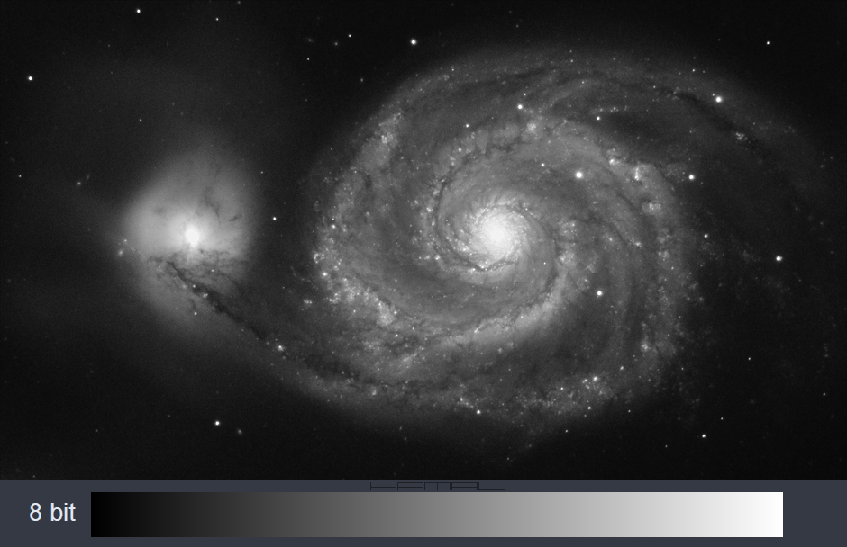 8 bit to możliwe maksymalnie 256 stanów (28 czyli 2x2x2x2x2x2x2x2=256) Tu nie będziemy liczyć wartsw :] WRÓĆ DO WYKAZU DZIAŁÓW ➤ ❚ STUDNIA PIKSELA (FW - Full Well) Prościej :) Piksel to mikra kosteczka, która posiada taką właściwość, że gdy pada na nią światło, to potrafi ona absorbować fotony i odkładać ich ilość w postaci zgromadzonych wolnych elektornów. Wystarczy potem tylko policzyć te elektrony i już wiemy ile fotonów padło na piksel. Ilość fotonów jaką może przyjąć piksel zależy od jego budowy i rozmiaru, tak czy inaczej jest ona ograniczona. Objętość jaką dany piksel jest wstanie przyjąć nim się zapełni nazywamy Studnią piksela. Trudniej :) Studnia jest miarą pojemności piksela w zakresie możliwości absorbowania fotonów. Gdy umieszczasz swoją kamerkę w wyciągu okularowym w ognisku teleskopu, obraz/światło pada na matrycę i fotony są absorbowane przez piksele matrycy, w pikselu uwalniane są wtedy wolne elektrony, zwiększając poziom zgromadzonego ładunku. Studnia piksela to liczba wolnych elektronów w tak zwanej studni pikselowej. Im większa studnia, tym więcej fotonów przyjmie piksel, nim jego studnia zacznie być przepełniona i zacznie, jako wynik pomiaru, dawać obraz zupełnie biały. Bo pusta studnia piksela, czyli taka, na którą nie padł ani jeden foton, w procesie interpretacji jako piksel zdjęcia, prezentuje obraz czarny. Całkowicie pełna studnia piksela, czyli taka, na którą padło tyle fotonów, że wyczerpały pojemność studni, w procesie interpretacji jako piksel zdjęcia, daje kolor śnieżno biały. Wszystkie wartości pośrednie, pomiędzy stanem pustym i pełnym, dają różne odcienie szarości, o jasności, zależnej od wartości przyjętych fotonów i z tego tytułu nagromadzonych elektronów. Pojemność studni piksela zależy od jego rozmiaru, materiałów, z których został wykonany, budowy, oraz elektroniki matrycy. Studnia nie posiada konkretnych zakresów/poziomów niczym bity, takich jak 256,512,1024,2048,4096 8192, 16384, 65536, lecz przyjmuje różne wartości, jak np: 14500, 32400, 19200, 11200, 20000 Wizualizacja Studni Piksela ( głębsza - płytsza - szybciej - wolniej ) Narysować Studnię piksela, rzecz niby banalna, a w sieci sporo błędnych grafik. Przede wszystkim, rysowanie Studni piksela za pomocą rzutu 2D uniemożliwia wykonanie zadania prawidłowo, ponieważ w rzucie 2D, 2x większy piksel, posiada 2x większą objętość, co nie jest zgodne z rzeczywistością. Dodajmy do tego mit o szybciej się napełniającej mniejszej studni i mamy galimatias gotowy. Poniżej przykłady 2D obrazujące błędne założenie, iż mniejsza studnia wypełnia się szybciej. Mamy więc dwa pojemniki o tej samej szerokości, ale jeden płytszy, a drugi głębszy (przecież studnia jest płytsza i głębsza). Równomiernie padający deszcz (symbolizujący fotony) pada na oba pojemniki równocześnie i równomiernie, oczywistym więc jest, iż płytszy pojemnik napełnił się po brzegi szybciej od większego, co ponoć dowodzi niezbicie tego, że większa studnia piksela, napełnia się dłużej. Niniejszy sposób przedstawiania zagadnienia jest błędny. . 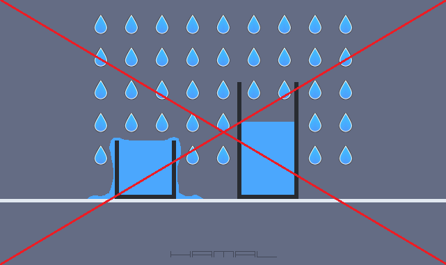 Mamy więc dwa pojemniki o tej samej wysokości, ale jeden węższy, a drugi szerszy (przecież piksele są większe i mniejsze). Równomiernie padający deszcz, pada na oba pojemniki jednocześnie. Gdy węższy pojemnik napełnił się po brzegi, ten szerszy napełnił się jedynie w połowie, co ponoć dowodzi niezbicie, że większy piksel napełnia się dłużej od mniejszego. Jest pewien problem, ponieważ już widać, że na dwa razy większy pojemnik, pada dwa razy więcej wody, więc oba wypełnią się w tym samym czasie. Niniejszy sposób przedstawiania zagadnienia jest błędny. . 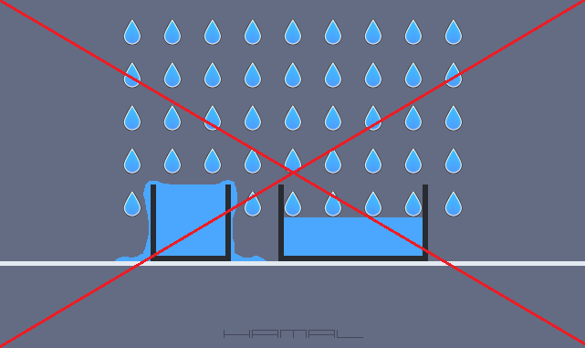 . W czym problem w takim razie przecież wypełnią się razem? A no w tym, że ten 2x większy ma dwa razy większą pojemność, a powinien mieć 4x większą. Poniżej ponownie dwie studnie, płytsza i głębsza, ale wypełnione za pomocą kulek symbolizujących elektrony w studni. Z grafiki nadal wynika, że studnia płytsza wypełnia się szybciej niż głębsza. Niniejszy sposób przedstawiania zagadnienia jest błędny. . 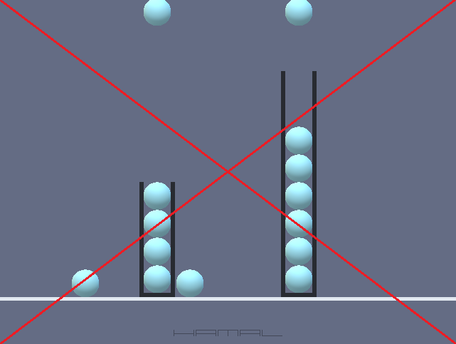 Poniżej ponownie dwie studnie, węższa i szersza (zgodnie z rozmiarem piksela), obie o tej samej wysokości, ale wypełnione za pomocą kulek symbolizujących elektrony w studni. Z grafiki błędnie wynika, że dwa razy większy piksel, jest w stanie pomieścić w swojej studni dwa razy więcej elektronów (4szt. i 8szt.). Niniejszy sposób przedstawiania zagadnienia jest błędny. . 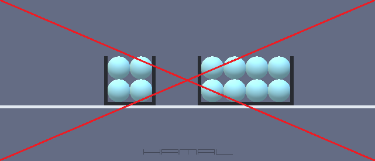 Poniżej prawidłowy sposób przedstawiania piksela oraz różnic w objętości studni. Dopiero na grafice 3D widzimy, że tak naprawdę, mając 2x większy piksel, mamy do czynienia z 4x większą objętością !!! Gdy dwa razy mniejszy piksel mieści w swojej studni 8 elektronów, ten dwa razy większy piksel pomieści ich 32. . 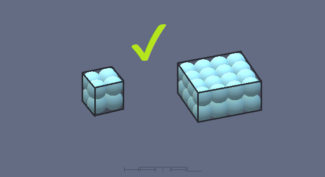 Rozprawmy się także z zagadnieniem napełniania się studni kroplami deszczu. Zauważcie, że równomiernie padający deszcz na 2x razy większy piksel o 4x powierzchni, ostatecznie daje taką samą ilość kropli na daną powierzchnię. Nieprawdą więc jest, że dwa razy mniejszy piksel napełni się szybciej od większego, bo ma mniejszą studnię. . 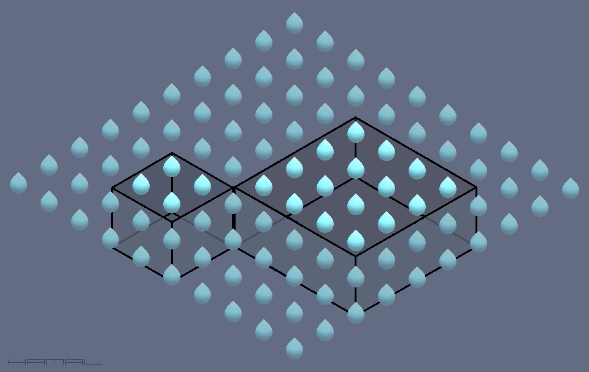 . 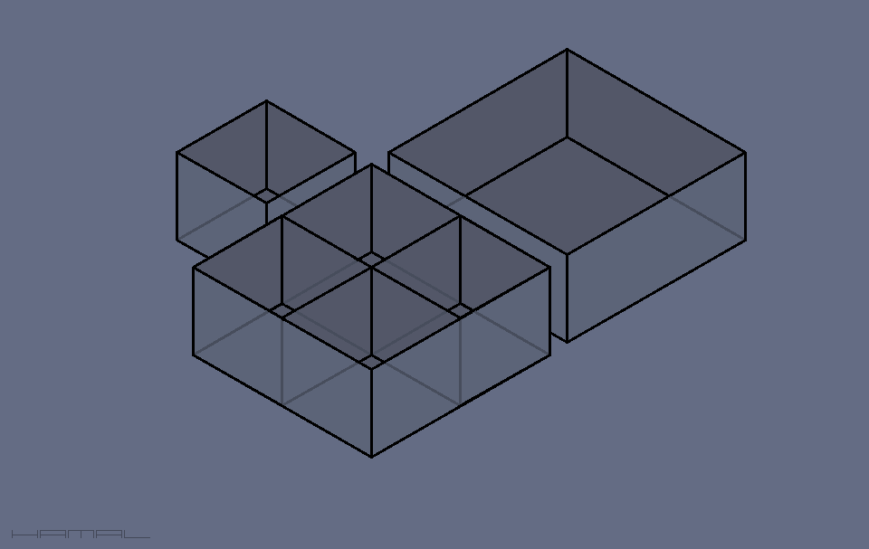 . 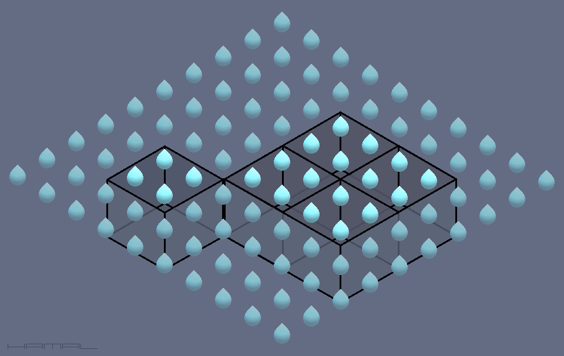 Znamy obiegowe stwierdzenie, iż mniejszy piksel jest gorszy, bo posiada mniejszą studnię i jego mniejsza studnia, wypełni się szybciej od studni większej. Jeśli w tym samym teleskopie, wycelowanym w dokładnie ten sam obiekt, umieścisz najpierw kamerkę o pikselu 10µ, a następnie kamerkę o pikselu 5µ, to ich studnie napełnią się w tym samym czasie, ponieważ na piksel 5µ, będzie padało 4x mniej światła, więc jego 4x mniejsza studnia, będzie napełniała się 4x mniejszą ilością fotonów, niż w tym samym czasie studnia piksela 10µ. Finalnie więc maksymalny poziom wypełnienia swoich studni, oba piksele osiągną po tym samym czasie naświetlnia. Głębokość studni a głębia bitowa obrazowania A jak pojemność studni przekłada się na obrazowanie kosmosu? 2x większy piksel, to 4x większa studnia, więc i 4x większa głębia bitowa obrazu. Poniżej przykład astrofotograficzny obrazujący różnicę. . 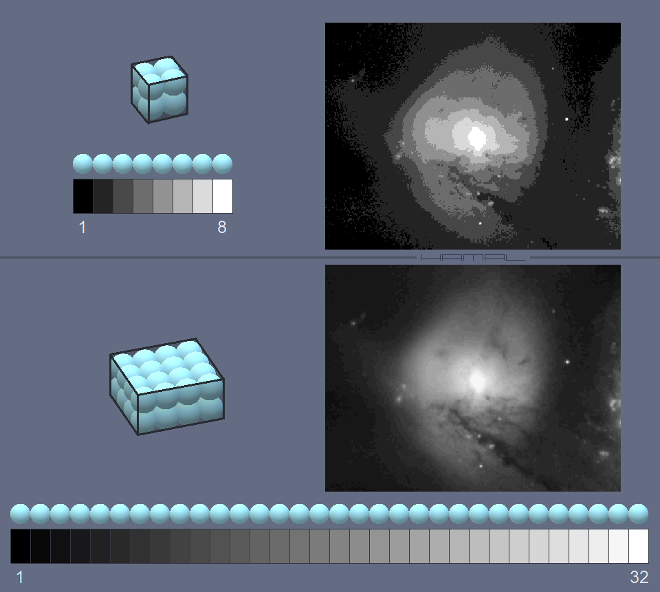 Przejdźmy teraz do samej Studni i procesów, w których ona uczestniczy. Poniżej możecie zobaczyć symboliczny proces przyjmowania przez piksel porcji światła powodujących wypełnianie się studni piksela elektronami i wpływ stopnia wypełnienia na końcowy wynik w postaci jasności piksela na zdjęciu. Jak dostrzeżecie, studnia w pewnym momencie stanie się już pełna, co odpowiada całkowicie białemu pikselowi zdjęcia, nie jest ona już w stanie przyjąć więcej porcji fotonów. . | animacja GIF - 191 klatek | 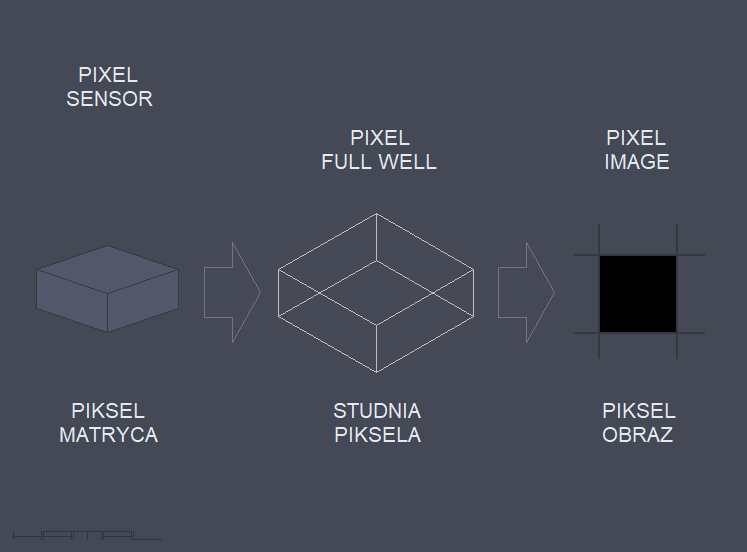 Animacja przedstawia studnię piksela posiadającą zakres 32 poziomów W dalszym etapie opracowania celem umożliwienia wyjaśnienia Wam innych zagadnień porzucimy prezentowany powyżej kulkowy widok perspektywiczny studni, na rzecz prezentowanego poniżej układu słupkowego. Poniżej widzicie dokładnie to samo co powyżej, jednak, na potrzeby dalszych prezentacji, przedstawione w sposób słupkowy. Jeden prostokąt słupka odpowiada jednemu elektronowi (kulce) studni. | animacja GIF - 191 klatek | | KLIKNIJ ABY WYRÓWNAĆ GRAFIKĘ W OKNIE PRZEGLĄDARKI | 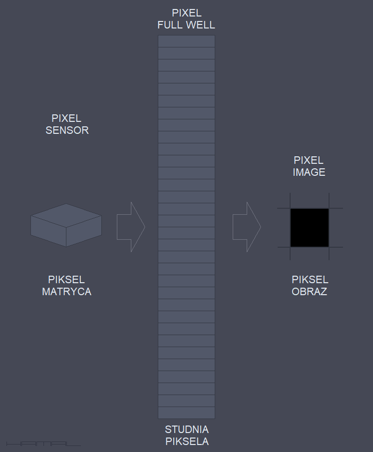 Animacja przedstawia studnię piksela posiadającą zakres 32 poziomów Obie animacje ZESTAWIONE RAZEM Wprowadzając Was dalej w temat, poniżej znajduje się prezentacja obrazująca tę samą studnię piksela, ale w różnej postaci. Patrz opis pod grafiką. . | KLIKNIJ ABY WYRÓWNAĆ GRAFIKĘ W OKNIE PRZEGLĄDARKI | 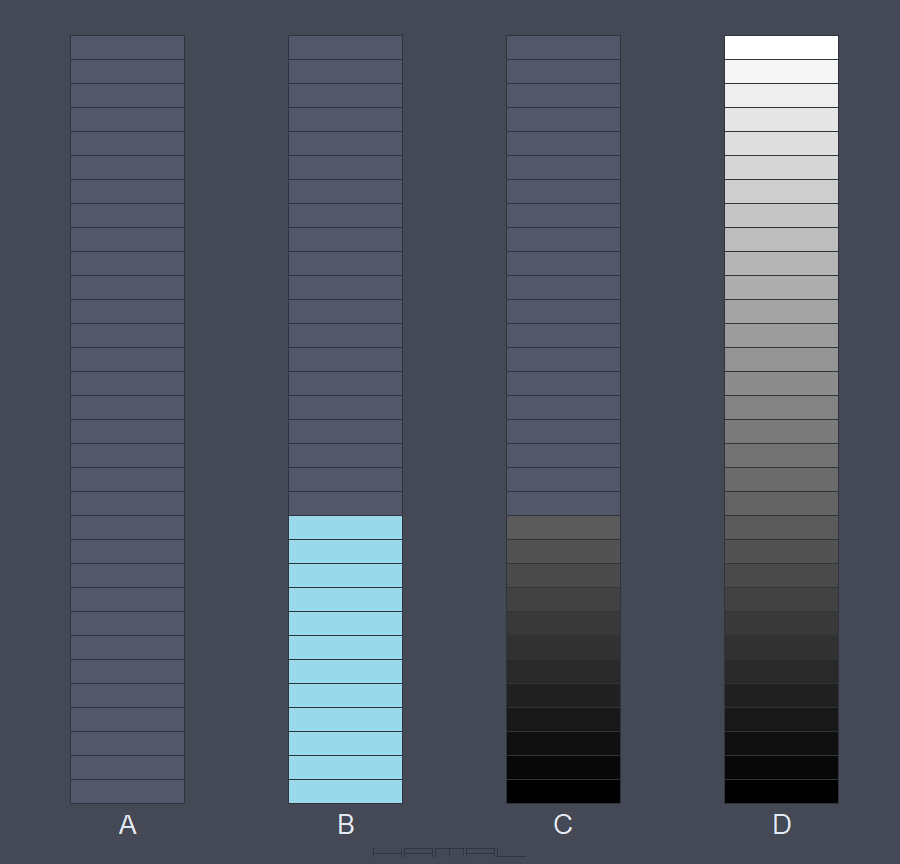 . A - symboliczna prezentacja zakresu studni piksela. Studnia pusta, bez zgromadzonych elektronów. Posiada zakres 32 poziomów. B - symboliczna prezentacja częściowo napełnionej studni piksela elektronami. Wykorzystała 12 poziomów z dostępnych 32. C - symboliczna prezentacja częściowo napełnionej studni piksela elektronami przełożona na analogiczne poziomy szarości. D - symboliczna prezentacja poziomów szarości w odniesieniu do całej danej pojemności studni piksela o 32 poziomach. WRÓĆ DO WYKAZU DZIAŁÓW ➤ ❚ PRZETWORNIK ANALOGOWO-CYFROWY - ADC (Analog-to-Digital Converter) Piksel łapie fotony, zamienia je na elektrony w swojej studni, ktoś, coś, musi potem to zinterpretować na daną wartość skali szarości piksela gotowego zdjęcia, tym zajmuje się ADC. ADC (Analog-to-Digital Converter), czyli Przetwornik analogowo-cyfrowy, jest to układ elektroniczny służący do zamiany sygnału analogowego na sygnał cyfrowy. Do przetwornika ADC sygnał wchodzi w formie analogowej (danego napięcia), wychodzi z niego w postaci cyfrowej jak np. 00001111 lub 01101001. Często wśród amatorów astrofotografów, słychać utyskiwania na producenta, który w dobrej kamerce, ze studnią o dużej pojemności, zamontował przetwornik ADC o dużo mniejszym zakresie. Gdy studnia posiada 40 960 poziomów, a ADC jedynie 12bit (4096 poziomów) to jego zakres pracy jest (65536/4096) 10x za niski. Mam nadzieję, że poniżej, uda mi się Wam zobrazować, na czym rzecz polega :) W poprzednich animacjach posłużyliśmy się uproszczonym schematem obrazowania, jednak Studnia samoczynnie nie przekształca swoich poziomów na skalę szarości, dlatego... ...pora poznać ADC :) | animacja GIF - 22 klatki | | KLIKNIJ ABY WYRÓWNAĆ GRAFIKĘ W OKNIE PRZEGLĄDARKI | 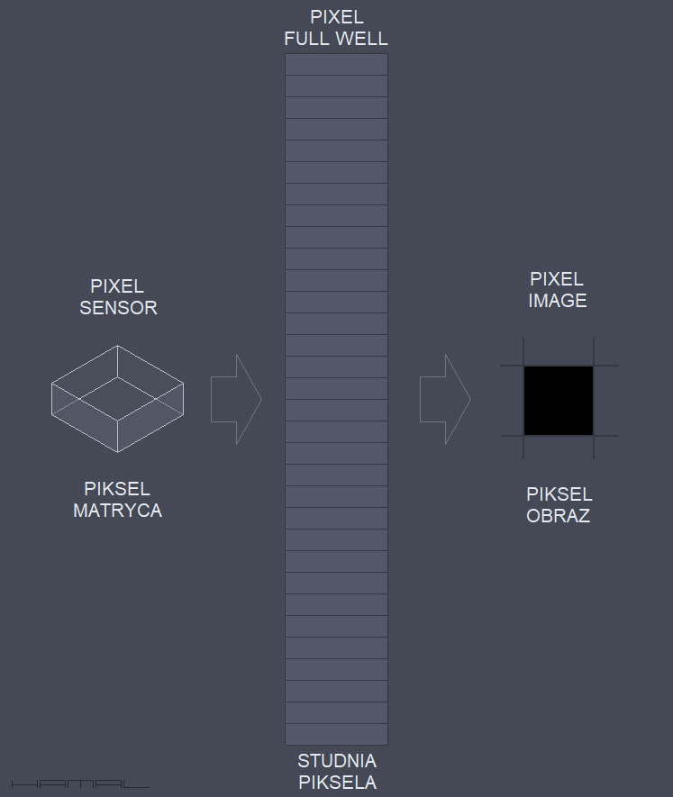 ADC będzie przybierał różne zakresy, a będą one obrazowane w poniższy sposób... Poniższa animacja prezentuje studnię piksela o zakresie 32 oraz ADC o zakresach 32, 16, 8. . | animacja GIF - 3 klatki | | KLIKNIJ ABY WYRÓWNAĆ GRAFIKĘ W OKNIE PRZEGLĄDARKI | 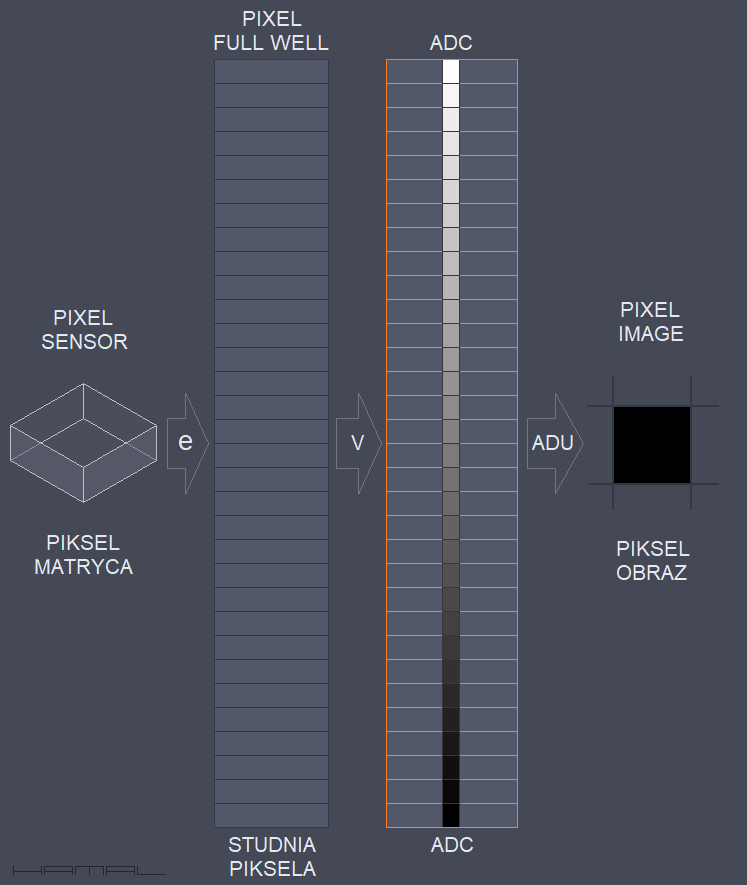 Za pomocą ADC dochodzi do przekształcenia informacji o poziomie wypełnienia studni piksela na adekwatny poziom skali szarości. Poniższa animacja prezentuje studnię piksela o zakresie 32 oraz ADC o zakresie 32. Jak widzimy, w takim zestawieniu nic się nie marnuje, każda zmiana poziomu studni piksela, dzięki ADC o zakresie pracy 1:1, zostaje przekształcona na zmianę skali szarości piksela na obrazie wyjściowym. . | animacja GIF - 73 klatki | | KLIKNIJ ABY WYRÓWNAĆ GRAFIKĘ W OKNIE PRZEGLĄDARKI | Poniższa animacja prezentuje studnię piksela o zakresie 32 i ADC o zakresie 16. Jak widzimy, w takim zestawieniu połowa informacji wysyłanej ze studni piksela się marnuje, tylko co druga zmiana poziomu studni, z powodu ADC o zakresie pracy dwa razy niższym od zakresu studni, zostaje przekształcona na zmianę skali szarości piksela na obrazie wyjściowym. | animacja GIF - 73 klatki | | KLIKNIJ ABY WYRÓWNAĆ GRAFIKĘ W OKNIE PRZEGLĄDARKI | 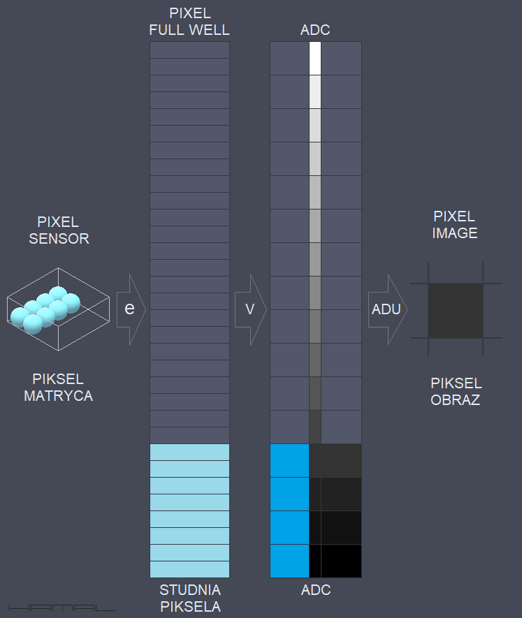 Poniższa animacja prezentuje studnię piksela o zakresie 32 i ADC o zakresie 8. Jak widzimy, w takim zestawieniu 3/4 informacji wysyłanej ze studni piksela się marnuje, tylko co czwarta zmiana poziomu studni, z powodu ADC o zakresie pracy cztery razy niższym od zakresu studni, zostaje przekształcona na zmianę skali szarości piksela na obrazie wyjściowym. | animacja GIF - 73 klaki | | KLIKNIJ ABY WYRÓWNAĆ GRAFIKĘ W OKNIE PRZEGLĄDARKI | Prezentowany powyżej 4x mniejszy zakres ADC względem studni piksela może wydawać się przesadzony, jednak w świecie rzeczywistym, ADC o wartościach 8-10x mniejszych niż studnia piksela, nie jest niczym niezwykłym. Zestawienie studni piksela o 32 poziomach i obu ADC (16 i 8 poziomów) w jedną animację, dla porównania. . | animacja GIF - 73 klatki | | KLIKNIJ ABY WYRÓWNAĆ GRAFIKĘ W OKNIE PRZEGLĄDARKI | 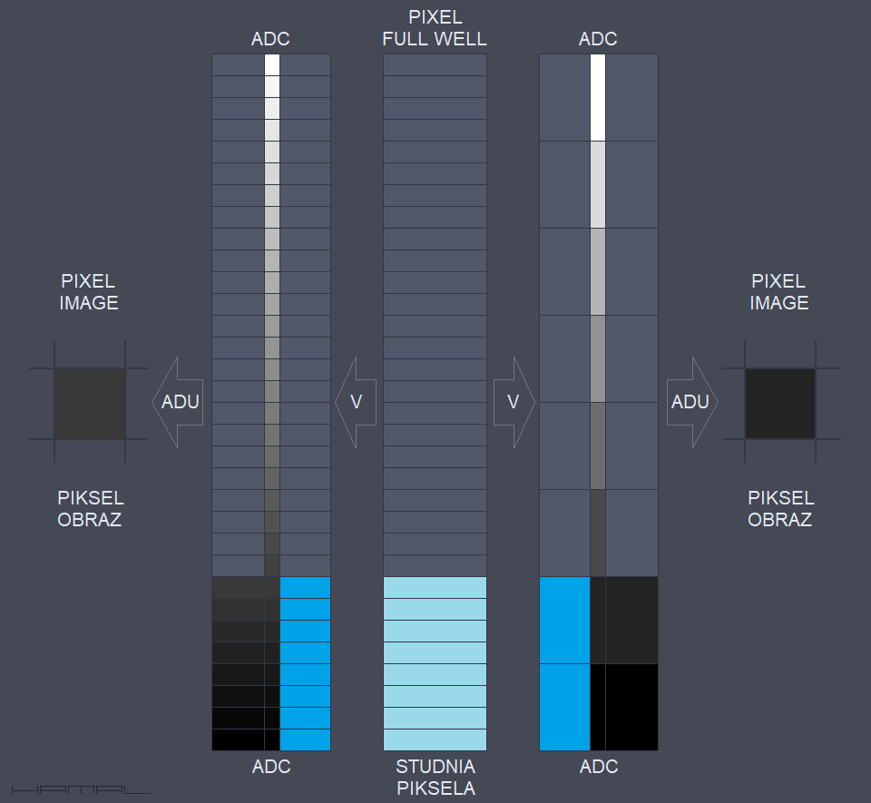 A jak to się przekłada na obraz złożony w większej liczby pikseli? Ano tak, jak widać to poniżej. Gdy rozdzielczość ADC odpowiada pojemności studni piksela. . 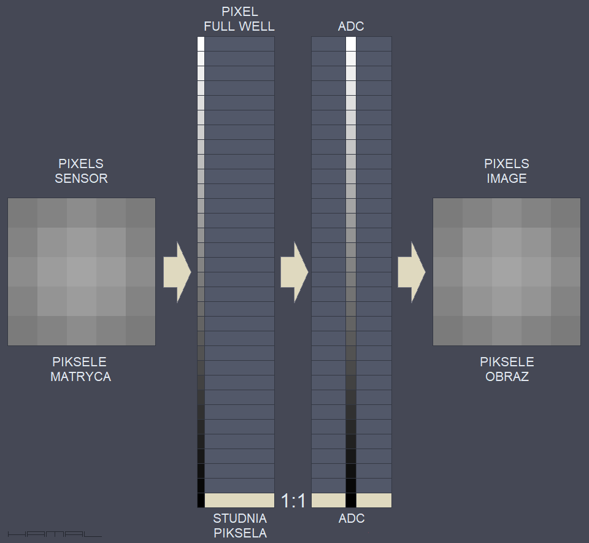 Gdy rozdzielczość ADC jest za niska względem pojemności studni piksela. . 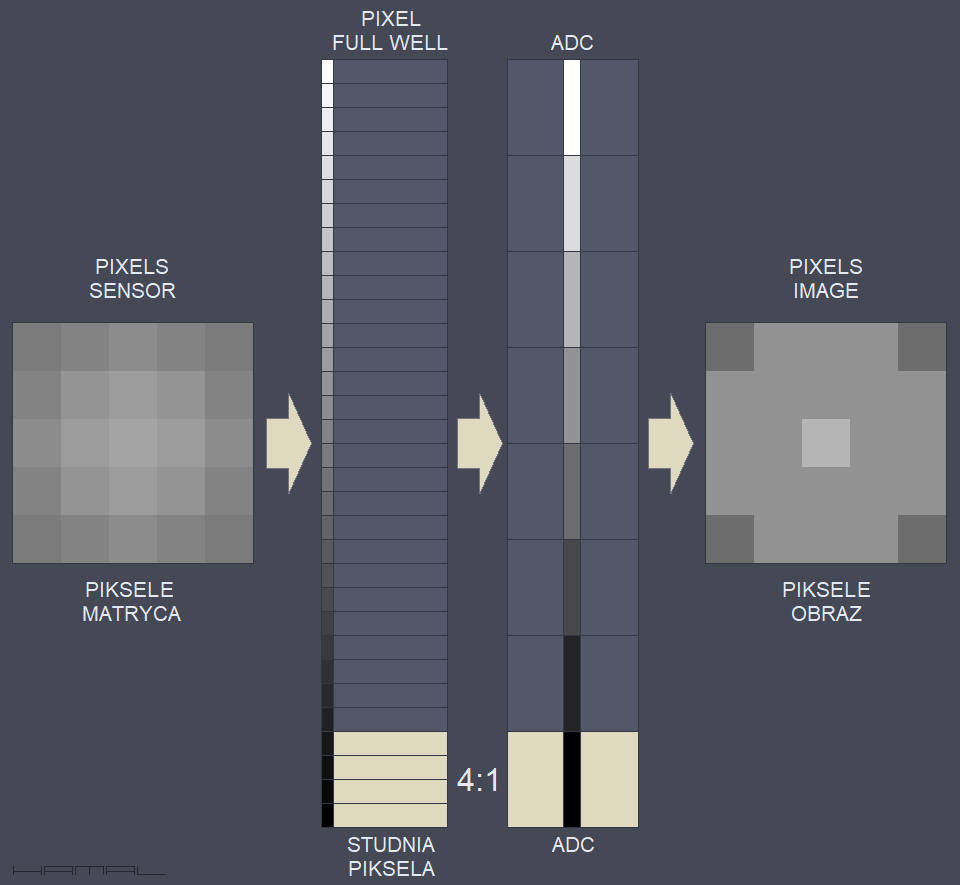 Jak do tego dochodzi... prezentują poniższe animacje. ADC dorównujący rozdzielczością studni piksela. . | animacja GIF - 151 klatek | | KLIKNIJ ABY WYRÓWNAĆ GRAFIKĘ W OKNIE PRZEGLĄDARKI | 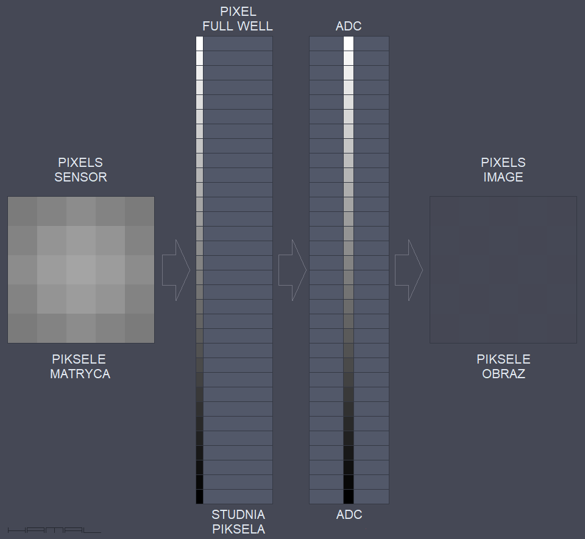 . Wersja UPROSZCZONA animacji. ADC niedorównujący rozdzielczością studni piksela, posiada ją czterokrotnie za niską. . | animacja GIF - 151 klatek | | KLIKNIJ ABY WYRÓWNAĆ GRAFIKĘ W OKNIE PRZEGLĄDARKI | 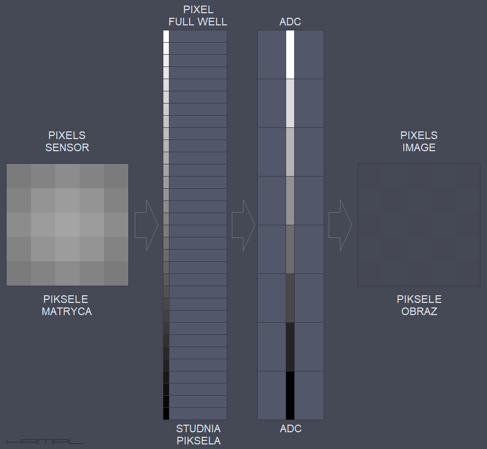 . Wersja UPROSZCZONA animacji. Inny sposób przedstawienia efektów. ADC niedorównujący rozdzielczością studni piksela, posiada ją czterokrotnie za niską. . 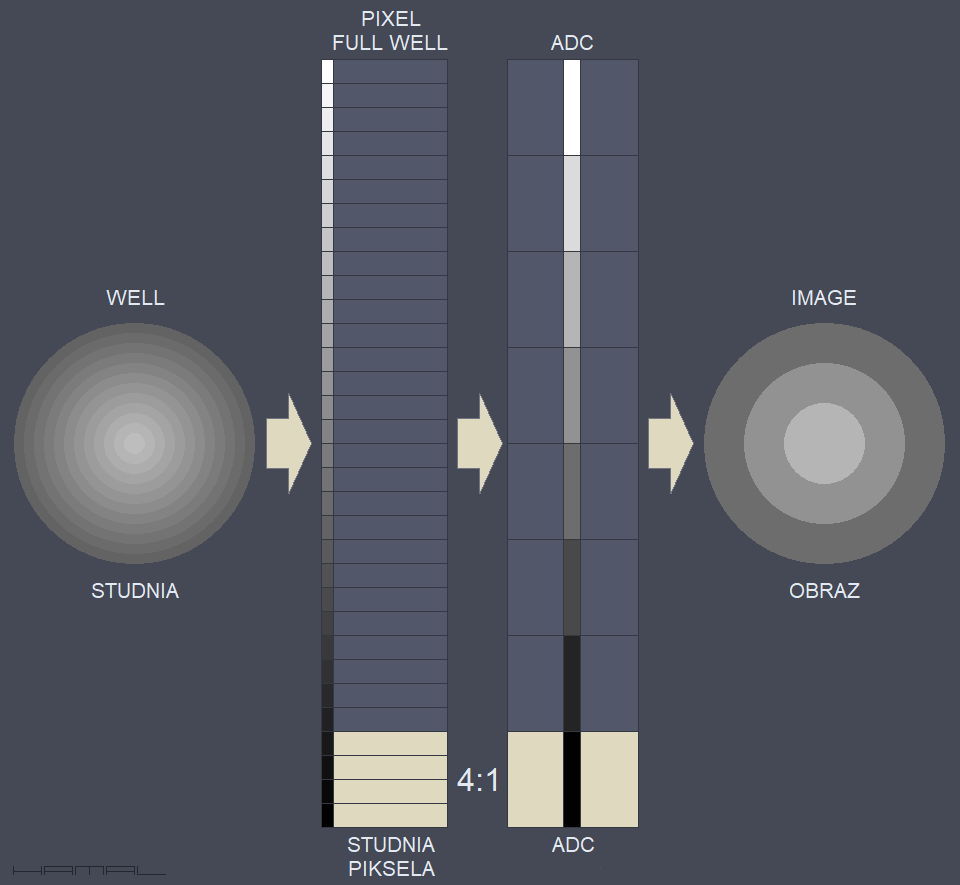 Animacja obrazująca proces... | animacja GIF - 73 klatki | | KLIKNIJ ABY WYRÓWNAĆ GRAFIKĘ W OKNIE PRZEGLĄDARKI | 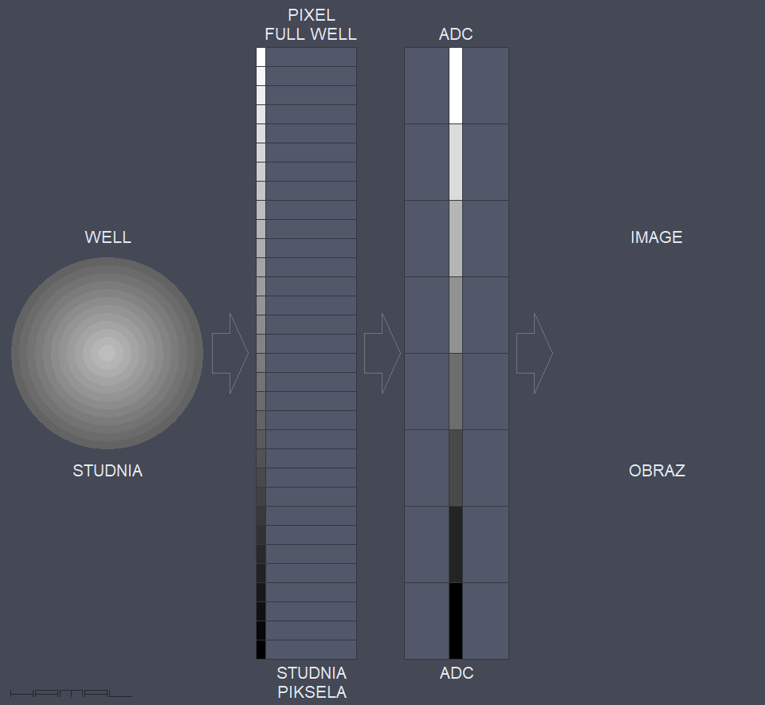 . Wersja UPROSZCZONA animacji. Zaprezentowane powyżej zjawisko nazywane jest błędem kwantyzacji/szumem kwantyzacji i objawia się właśnie w postaci posteryzacji, czyli widocznego powyżej zatarcia się wielu różnic tonalnych i grube skokowe przechodzenie między tonacjami. Teraz już, słysząc utyskiwania na producenta, który zamontował przetwornik ADC 12 bit, lub 14 bit, do matrycy o studni 40000, czy 60000, będziecie rozumieli przyczynę rozgoryczenia nabywców :) Na razie inżynierowie szumów w to nie mieszajmy :) WRÓĆ DO WYKAZU DZIAŁÓW ➤ ❚ ADU (Analog Digital Unit) | e-/ADU ADU (Analog Digital Unit) to jednostka analogowo-cyfrowa. Gdy do ADC przybywa jakaś wartość w postaci napięcia, aby mu nadać cyfrową wartość w skali szarości, to otrzymujemy wartość ADU. ADC posiadają wartości bit-owe, przyjmują więc zakresy pracy takie jak: . 8 bit - 256 9 bit - 512 10 bit - 1024 11 bit - 2048 12 bit - 4096 13 bit - 8192 14 bit - 16384 16 bit - 65536 Im większy zakres posiada ADC, tym lepiej odwzoruje przychodzący do niego sygnał. e-/ADU e-/ADU informuje nas, ile elektronów studni piksela (e-) przypada na jedno ADU ADC (bity) I tak: . -gdy pojemność studni wynosi 1024 e- a zakres ADC wynosi 1024 ADU wtedy mamy 1 e-/ADU -gdy pojemność studni wynosi 2048 e- a zakres ADC wynosi 1024 ADU wtedy mamy 2 e-/ADU -gdy pojemność studni wynosi 4096 e- a zakres ADC wynosi 1024 ADU wtedy mamy 4 e-/ADU Użyłem studni o wartościach 1024,2048,4096, aby uniknąć ułamkowych wartości. Poniższa grafika odwzorowuje zagadnienie, ale w mniejszej skali. Na 32 poziomy studni piksela, przypada 32, 16, 8 poziomów ADC, dając nam analogicznie 1 e-/ADU, 2 e-/ADU, 4 e-/ADU. | animacja GIF - 3 klatki | | KLIKNIJ ABY WYRÓWNAĆ GRAFIKĘ W OKNIE PRZEGLĄDARKI | 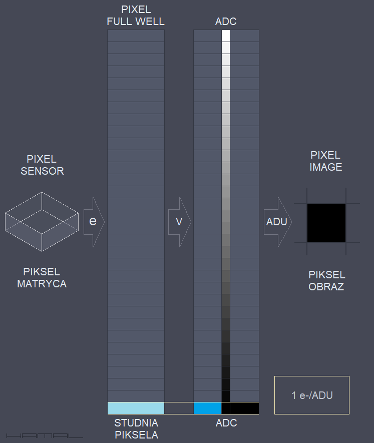 Studnia piksela nie jest ograniczona wartościami bitowymi i może posiadać dowolną wartość, ja jednak dla studni piksela w przykładach stosuję wartość 32, która nie przypadkiem jest wartością bitową, a to dlatego, by było łatwiej pokazywać proporcje między studnią piksela a ADC, aby nie wychodziły wartości ułamkowe, które by skomplikowały tworzenie dla Was klarownych przykładów. Jak już wspomniałem powyżej, dla klarowności uprzednich przykładów, zastosowałem wartości studni pasującą równo do ADC, w życiu, zazwyczaj są one różne i nie dają równych wyników. Dla przykładu: - gdy studnia posiada pojemność np.16000 e-, a do niej podłączony jest ADC o zakresie pracy 12 bit, czyli 4096 ADU, co (16000/1096=3,90) daje nam ok. 3.9 e-/ADU - gdy studnia posiada pojemność np.30000 e-, a do niej podłączony jest ADC o zakresie pracy 14 bit, czyli 16384 ADU, co (30000/16384=1,83) daje nam ok. 1.8 e-/ADU - Kamerka ZWO ASI 174 posiada studnię o pojemności 34000 e- oraz ADC o zakresie pracy 12 bit, czyli 4096 ADU, co (34000/4096=8,30) daje nam ok. 8.3 e-/ADU . Bywa też tak, jak to ma miejsce w kamerce ZWO ASI 178, która posiadając studnię 15000 e- otrzymała ADC o zakresie pracy 14 bit, czyli 16384 ADU, co (15000/16384=0,91) daje nam ok. 0.9 e-/ADU, a to oznacza, że użyty ADC posiada rozdzielczość większą, niż studnia matrycy kamerki, i nie marnuje nic z jej zakresu. WRÓĆ DO WYKAZU DZIAŁÓW ➤ ❚ WZMOCNIENIE - GAIN Dotychczas, w animacjach, posługiwaliśmy się uproszczonym schematem, niezawierającym Gain-u, jednak... ...pora poznać GAIN :) Spróbuję Wam zaprezentować, jak Gain wpływa na procesy zachodzące w kamerce, co pozwoli Wam bardziej świadomie z niego korzystać. . | animacja GIF - 33 klatki | | KLIKNIJ ABY WYRÓWNAĆ GRAFIKĘ W OKNIE PRZEGLĄDARKI | 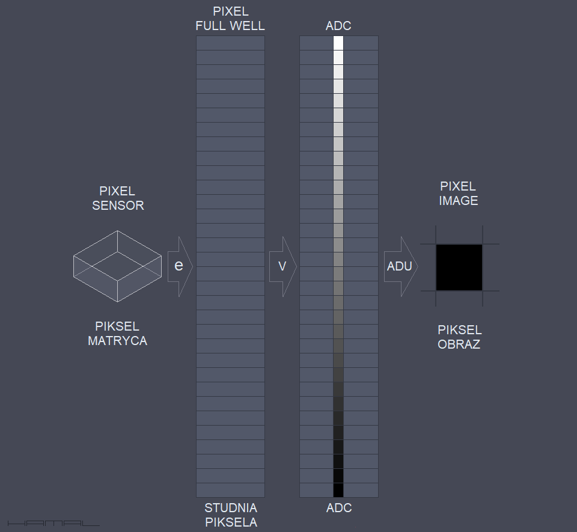 GAIN w moich prezentacjach będzie przybierał krotności wzmocnienia 1x,2x,4x, będą one obrazowane w poniższy sposób. . | animacja GIF - 3 klatki | | KLIKNIJ ABY WYRÓWNAĆ GRAFIKĘ W OKNIE PRZEGLĄDARKI | 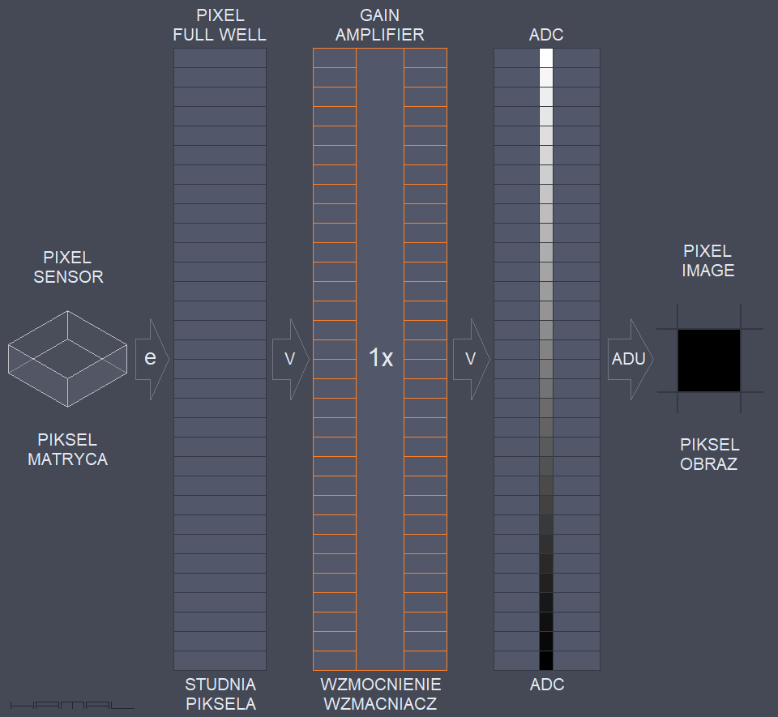 Poniżej animacja z Gain-em o krotności 1x (czyli nastaw 0), gdy nie wnosi on nic, niczego nie zmienia, przepuszcza to, co wchodzi, w identycznym stanie i podaje na wejście ADC. Równie dobrze, tego Gain-u mogłoby tu nie być. Zakres wyjściowy Gain-u odpowiada zakresowi ADC, dzięki temu, nic się nie marnuje, każda zmiana poziomu studni piksela znajduje odzwierciedlenie w zmianie poziomu skali szarości na ADC. . | animacja GIF - 113 klatek | | KLIKNIJ ABY WYRÓWNAĆ GRAFIKĘ W OKNIE PRZEGLĄDARKI | 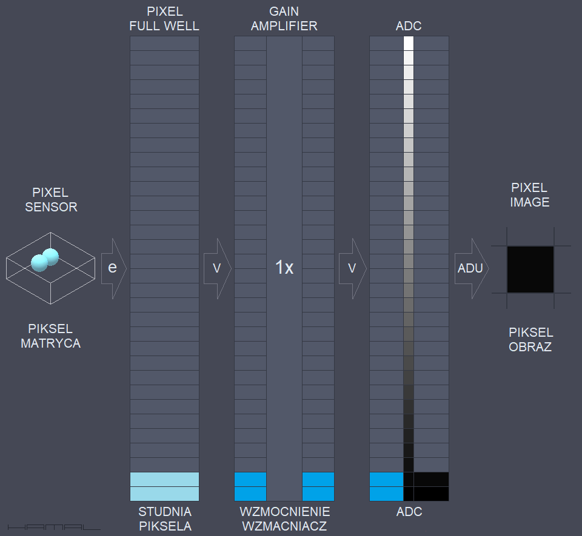 Poniżej animacja z Gain-em o krotności 2x. Zauważcie, jak wzmocniony sygnał konsumuje po dwie wartości zakresu ADC jednocześnie, marnując jego potencjał rozdzielczości. . | animacja GIF - 145 klatek | | KLIKNIJ ABY WYRÓWNAĆ GRAFIKĘ W OKNIE PRZEGLĄDARKI |  Poniżej animacja z Gain-em o krotności 4x. Zauważcie, jak wzmocniony sygnał konsumuje po cztery wartości zakresu ADC jednocześnie, marnując jego potencjał rozdzielczości. . | animacja GIF - 81 klatek | | KLIKNIJ ABY WYRÓWNAĆ GRAFIKĘ W OKNIE PRZEGLĄDARKI |  Dla lepszego zobrazowania różnic między gainem 1x a gainem 4x zrobiłem zestawienie obu animacji. . | animacja GIF - 81 klatek | | KLIKNIJ ABY WYRÓWNAĆ GRAFIKĘ W OKNIE PRZEGLĄDARKI | 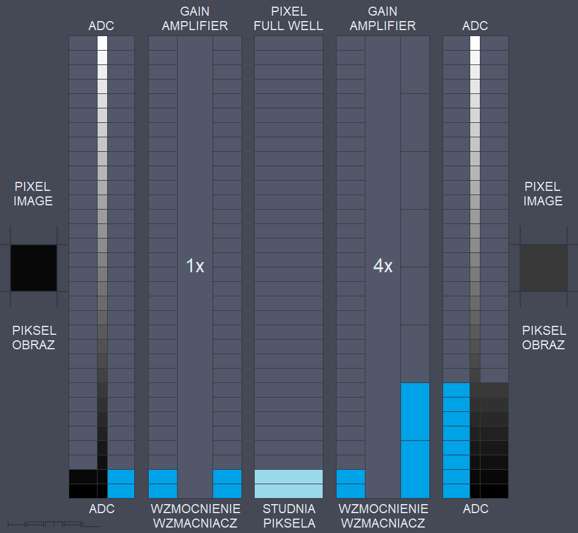 Gain w programach do akwizycji posiada różne skale wartości nastawu (np. od 1 do 1000, od 0 do 600), dla naszych potrzeb, posłużymy się tym ZWO ASI z programu FireCapture, w skali od 0 do 600. Dla nas ciekawe jest to, jak ustawienie danych wartości, przekłada się na krotność wzmocnienia. Zauważcie na grafice poniżej, że nastawienie suwaka na wartość 50z600, powoduje wzmocnienie 1,78x, a ustawienie na wartość 100z600, powoduje wzmocnienie 3,16x, dopiero użycie wartości 200z600, powoduje krotność 10x. Ale z czego to wynika? Dlaczego 10, to nie 10x, a 20, to nie 20x? Ponieważ Gain wyrażany jest w Decybelach, a one, są logarytmiczną jednostką miary. Dla przykładu, skala od 0 do 600, gdzie 1, to 0.1dB, oznacza, iż 100, to 10dB, 200, to 20dB, 300, to 30dB, 400, to 40dB, 500, to 50dB, 600, to 60dB, jednak, wzmocnienie 1x, to 0dB, czyli suwak na 0z600, wzmocnienie 10x, to 20dB, czyli suwak na 200z600, a wzmocnienie 100x, to 40dB, czyli suwak na 400z600, na koniec, suwak na 600z600, to 60dB, a wzmocnienie wynosi 1000x. . 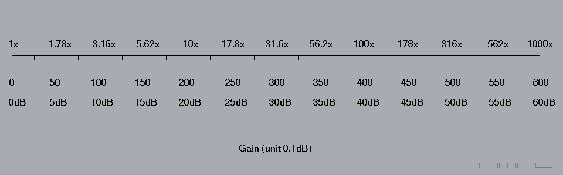 W takim razie zapytacie, jakie należy nastawić wartości, na skali od 0 do 600, aby uzyskać wzmocnienie o krotności 2x,4x,8x? Łatwo to sprawdzicie, wpisując poniżej, w górne okienko, cyfrę 2, lub 4, lub 8, lub inne wartości :) .
Wzmocnienie 2x to 6.0dB, czyli suwak na 60z600, wzmocnienie 4x to 12.1dB, czyli suwak na 121z600, wzmocnienie 8x to 18.1dB, czyli suwak na 181z600. . 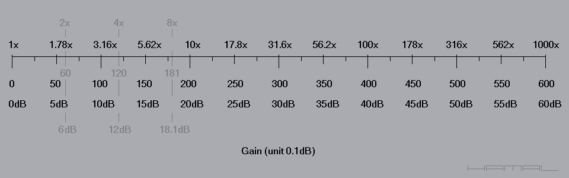 WRÓĆ DO WYKAZU DZIAŁÓW ➤ ❚ UNITY GAIN WZMOCNIENIE ZERO vs WZMOCNIENIE JEDNOSTKOWE | GAIN 0 vs UNITY GAIN Używając Gain 0, wykorzystujemy pełny zakres studni piksela, co najważniejsze dla wielu, nie przepalamy jasnych gwiazd w białe placki. A co w sytuacji, gdy nie zależy nam na nieprzepalonych gwiazdach, a jedynie poszukujemy najbardziej optymalnego wzmocnienia do słabych obiektów? Czy pomiędzy nastawem 0 a 600 istnieje Gain, który w związku z jakimiś cechami szczególnymi, jest wart szczególnej uwagi? Ano istnieje, jest nim Unity Gain. Zakresy wzmocnienia ustawione pomiędzy Gain 0, a Unity Gain, marnują rozdzielczość naszej studni piksela, powodując zmianę skali szarości na ADC, tylko co ileś zmian poziomu studni piksela. Zakresy Gain-u ustawione powyżej Unity Gain, marnują rozdzielczość naszego ADC, powodując, że nadmiernie przerośnięte sterydami wzmocnienia poziomy naszej studni, konsumują kilka poziomów ADC jednocześnie. Patrz animacje powyżej (Gain 2x oraz Gain 4x). . Pracując na ekstremalnych parametrach obrazu, walcząc o każdy foton, chcemy, aby każda zmiana poziomu studni piksela przekładała się na kolejny poziom szarości na obrazie wyjściowym, to właśnie realizuje nam Unity Gain. Ale ile on wynosi, zapytacie, przecież każda kamerka ma inną wartość. A no ma, ale można to sprawdzić na opisach producenta, lub policzyć, a robi się to następująco: . Jeśli pojemność Studni jest 4x mniejsza, niż zakres ADC, to Unity Gain będzie tam, gdzie wzmocnienie Gain wynosi 4x. Gdy pojemność studni jest 8x mniejsza, niż zakres ADC, to Unity Gain będzie tam, gdzie jego wzmocnienie wynosi 8x. A gdzie te krotności wypadają na naszej skali Gain od 1 do 600? Patrz grafika poniżej. A jak to ma się w życiu? Sprawdźmy :) Kamerka ZWO ASI 290 posiada studnię o zakresie 14600 oraz ADC o zakresie 12bit (czyli 4096 jednostek), więc 14600/4096=3,564. Stąd kamerka ZWO ASI 290 posiada ok. 3,56x za mały ADC, względem studni. W takim razie, Unity Gain powinien wypadać tam, gdzie wzmocnienie wnosi 3,56x. Zobaczmy ile to dB. . Wpisz w górne okienko krotności x, cyfrę 3.56 (z kropką, nie przecinkiem) to na dole otrzymasz przeliczenie w dB
Wynik to ok. 11.0 dB, czyli na naszej skali wzmocnienia od 0 do 600 (patrz powyżej), to wartość 110, bo skala posiada jednostkę 0.1dB, więc 110x0,1=11 POPATRZMY czy się zgadza i deklarowany Unity Gain ZWO ASI 290 wynosi 110. Jest 110 :) Kiedy mamy do czynienia z UNITY GAIN? UNITY GAIN jest wtedy, gdy dzięki krotności Gain-u, jednostka Studni na wyjściu z Gain-u, odpowiada jednostce na ADC, a tym samym, jeden elektron studni piksela, przypada na jedno ADU zakresu pracy ADC. Patrz Poniżej. . | animacja GIF - 9 klatek | | KLIKNIJ ABY WYRÓWNAĆ GRAFIKĘ W OKNIE PRZEGLĄDARKI | 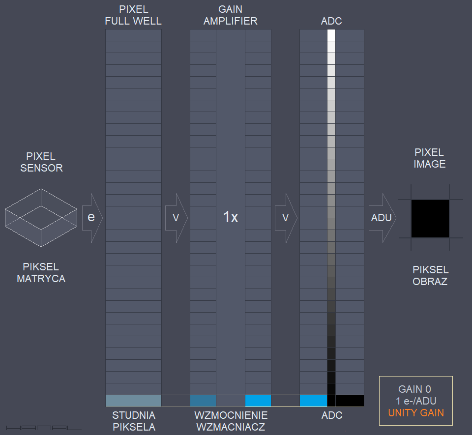 Obrazki z animacji, do analizy na spokojnie TUTAJ Przejdziemy teraz do studni piksela o zakresie 64 poziomów, aby móc dokładniej przedstawić zagadnienie. Poniższa animacja ma za zadanie uzmysłowić Wam, jakie przełożenie na obrazowanie ma Gain 0, w sytuacji, gdy rozdzielczość ADC jest 4x za mała. Użyto Gain 0. | animacja GIF - 354 klatki | | KLIKNIJ ABY WYRÓWNAĆ GRAFIKĘ W OKNIE PRZEGLĄDARKI | WERSJA PRZYSPIESZONA - TURBO | WERSJA ZOPTYMALIZOWANA Poniższa animacja ma za zadanie uzmysłowić Wam, jakie przełożenie na obrazowanie ma Unity Gain, w sytuacji, gdy rozdzielczość ADC jest 4x za mała, ale podbity Unity Gain-em sygnał ze studni, dorównuje poziomami ADC. Użyto Unity Gain. | animacja GIF - 234 klatki | | KLIKNIJ ABY WYRÓWNAĆ GRAFIKĘ W OKNIE PRZEGLĄDARKI |  WERSJA PRZYSPIESZONA - TURBO | WERSJA ZOPTYMALIZOWANA Animacja - Szybkie zestawienie finalne Gain 0 (4e-/ADU), oraz Unity Gain (1e-/ADU). | animacja GIF - 2 klatki | | KLIKNIJ ABY WYRÓWNAĆ GRAFIKĘ W OKNIE PRZEGLĄDARKI | 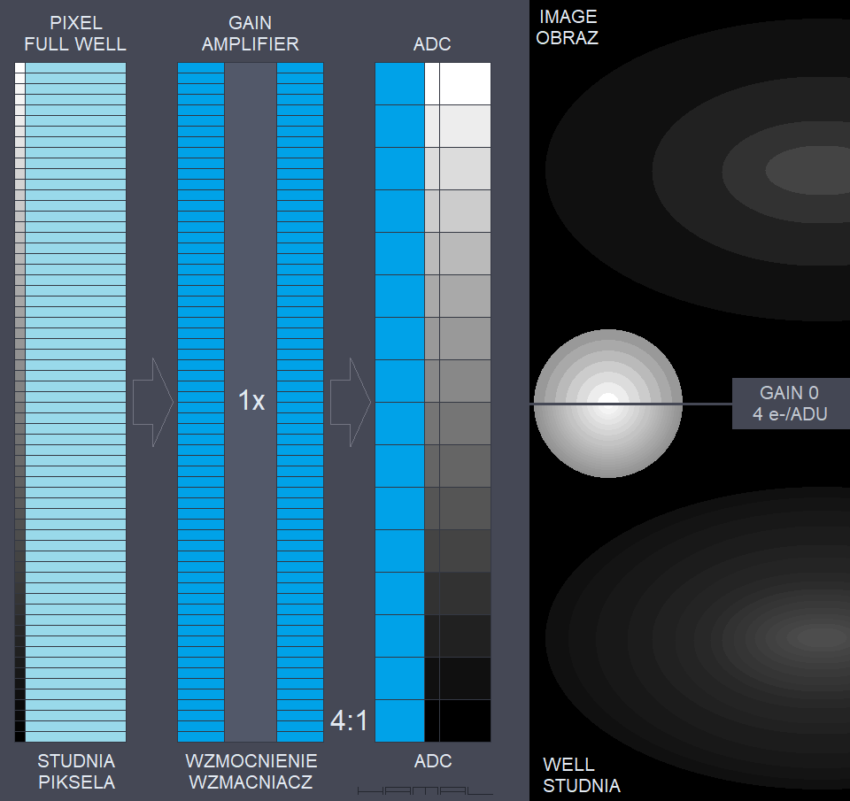 Jak widzimy, podsumowując, Gain 0 pozwala wykorzystać nam pełny zakres studni, jednak czyni nam posteryzację na gwiazdach i obiektach. Unity Gain przycina nam zakres studni piksela, przepalając gwiazdy, ale pozwala o wiele szybciej doświetlić słabe obiekty i wyklucza posteryzację wynikającą z kwantyzacji na ADC. Pewnie zaraz zauważycie, że fotografując niebo, posteryzacji na gwiazdach i galaktykach, nie widać. Ano nie widać, a to akurat, co ciekawe, zasługa szumu, jednak fakt istnienia zagadnienia i rozumienia go jest przydatny dla zrozumienia Unity Gain-u, oraz wypłynie w dziale astrofotografii planetarnej, miłośnicy tej dyscypliny znają posty na Forach zatytułowane "Ratujecie, co robić, cebula wychodzi mi na Jowiszu", a rada była i jest zawsze ta sama "masz za mały Gain, zwiększ go". Gain 0 bruździ także w astrofotografii wysokich rozdzielczości, którą uprawiam, a że nic tak nie działa na wyobraźnię, jak zdjęcia, przygotowałem poniższe zestawienie. Jest to mgławica planetarna NGC 6210, zwiększamy stopniowo Gain. Na lewo wersja oryginalna, na prawo wersja rozjaśniona. 7s, Gain 0/600 . 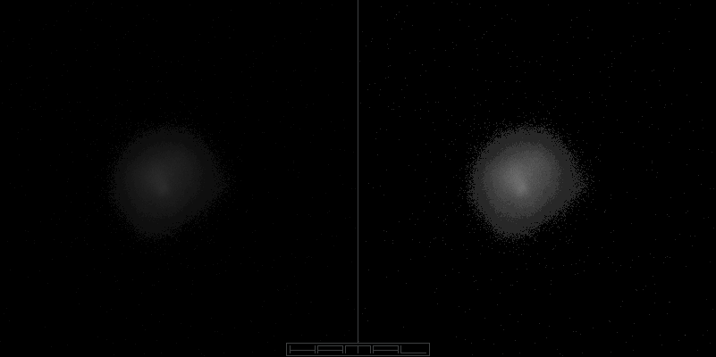 7s, Gain 50/600 . 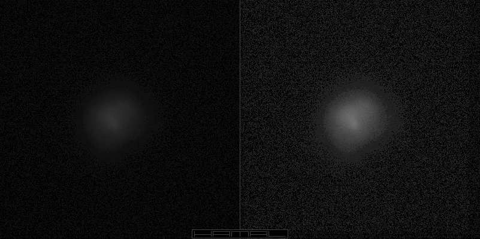 7s, Gain 100/600 . 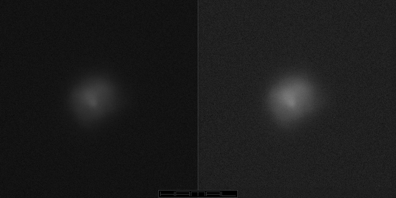 Wnioski? Gain 0 paskudzi niemiłosiernie, Gain 50 to nadal za mało, Gain 100 pozwala pozbyć się problemu, mamy piękne płynne przejścia tonalne. Notabene, w tej kamerce Gain 110 to ten niedobry, nieuznawany przez wielu, Unity Gain :) WRÓĆ DO WYKAZU DZIAŁÓW ➤ ❚ HISTOGRAM Zanim przejdziemy do następnego działu, muszę Wam wytłumaczyć, czym jest Histogram, dlatego, jeśli jest Wam obcą materią, poświęćcie mu chwilę :) W fotografii istnieje potrzeba szybkiej oceny ilości pikseli o poszczególnych jasnościach i temu właśnie służy opisywany tu histogram. Histogram to wykres słupkowy na dwie osie, oś pionowa pokazuje ilość wystąpień pikseli o danej jasności, a oś pozioma przedział jasności obrazu, z którego ta ilość pochodzi. Na grafice poniżej widzimy obraz o wymiarach 6x6 pikseli. Pod obrazem znajduje się histogram stworzony na jego bazie, z którego można szybko wyczytać, iż obraz zawiera: - 4 piksele o jasności A - 12 pikseli o jasności B - 8 pikseli o jasności C - 8 pikseli o jasności D - 4 piksele o jasności E - 0 pikseli o jasności F - 0 pikseli o jasności G - 0 pikseli o jasności H . | animacja GIF - 2 klatki | 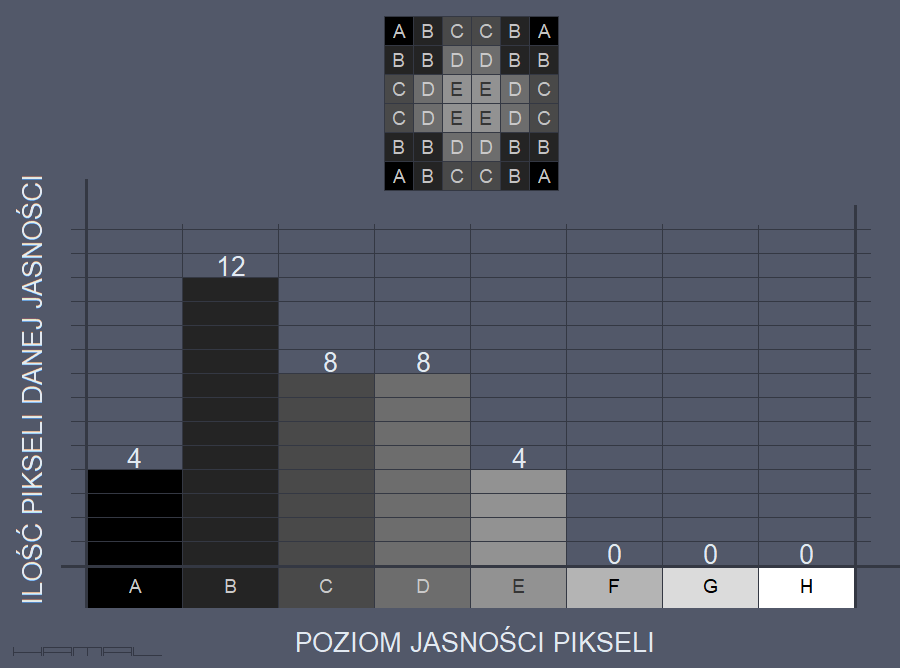 Dla odmiany, poniższy histogram informuje, iż obraz zawiera: - 0 pikseli o jasności A - 0 pikseli o jasności B - 0 pikseli o jasności C - 4 piksele o jasności D - 12 pikseli o jasności E - 8 piksele o jasności F - 8 piksele o jasności G - 4 piksele o jasności H . 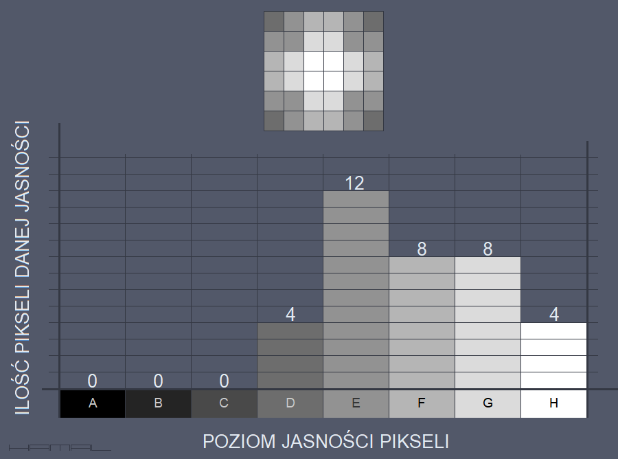 Wszystkie przedstawione poniżej Histogramy przedstawiają to samo, jedynie proporcje prezentacji i kolorystykę mają różne. Kolor, szerokość i wysokość są dowolne, stanowią one jedynie formę wykresu, to ilość wystąpień w danych przedziałach ma znaczenie. Inny obrazek w trochę większej rozdzielczości. Więcej upakowanych słupków. . Jeszcze więcej, jeszcze gęściej, jeszcze drobniej... . Gdy robi się tak gęsto, że już niesposobna rozdzielać kreskami poszczególnych wartości, histogram wygląda wtedy gładko i jednolicie. . WRÓĆ DO WYKAZU DZIAŁÓW ➤ ❚ OFFSET Offset (Bright-Brightness-Jasność) Astrofotografia nieustannie operuje w ciemnościach, daleko jej do zdjęć z wakacji, gdzie wszystko jest pięknie naświetlone. Grzebiąc się ciągle z czarnych partiach obrazu, posiadamy potrzebę, aby wartość najciemniejszych pikseli nie wynosiła zero. Dokonując akwizycji z różnymi parametrami, możemy doprowadzić do sytuacji, gdy w ciemnych partiach obrazu, zamiast pikseli o wartościach 2,4,2,3, uzyskamy wynik 0,0,0,0, dlatego, korzystając z możliwości, jakie daje nam Offset, podbijamy wartość wyjściową, przechodząc przez krytyczny próg przycięcia wartości zbyt niskich, i zamiast 0,0,0,0, w miejsce 2,4,2,3, otrzymamy 12,14,12,13, i uratujemy informację o różnicy jasności pikseli, która by przepadła w czeluściach totalnej czarności :) Weźmy taki sympatyczny przykład :) . Mierzymy wzrost. Przed nami stoi mur o wysokości 1,5 metra, a za murem, w rzędzie, dorośli i dzieci. Dorośli są na tyle wysocy, że widać ich ponad murem (reprezentują dobrze naświetlone jasne partie obrazu), dzieci, są na tyle niskie (ciemne partie obrazu), że nic ponad mur nie wystaje. Co zatem możesz powiedzieć o wzroście dzieci? Przychodzi offset, czytaj, podstawiamy im wszystkim ławeczkę, i dorosłym, i dzieciom, na tyle wysoką, że teraz wszystkie główki dzieci wystają ponad mur, do tego proporcjonalnie do wzrostu, gdyż wszyscy stoją na tej samej ławeczce, dostali ten sam bonus wysokości. Teraz, potrafimy bez problemu ocenić wzrost wszystkich względem siebie, możemy wypełnić tabelkę, także tam, gdzie są w niej dzieci, gdyż w innym przypadku, pozostałoby nam wpisać zera, nawiązując do poprzedniego przykładu :) Bardzo upraszczając, takie zadanie czyni dla nas Offset, podnosi poziom pikseli ponad próg, który uniemożliwia nam odczytanie zbyt niskich wartości. Wróćmy do grafiki. Nie bez powodu, dział wcześniej, opisałem Wam Histogram, gdyż to za jego pomocą, wyjaśnimy teraz Offset. Offset optymalny to taki, gdy Histogram nie jest przycięty, ani z lewej, ani z prawej strony. Prezentowane przykłady będą posługiwały się Offset-em w przedziale 0-240. Poniżej czarne niebo i trzy galaktyki a pod nimi histogram. Histogram jest prawidłowy, nieprzycięty ani z prawej, ani z lewej strony. Tło lekko jaśniejsze niż czarna czerń, wydobywa naszym oczom najsłabsze słabostki ciemnych partii obrazu. . Poniżej Offset za mały, przyciął nam histogram z lewej strony (ciemne partie obrazu) tło ciemne jak smoła, przepadły słabe galaktyki. Offset minimalny 0%, czyli (0) w skali 0-240. . Poniżej, Offset za duży, przyciął nam histogram z prawej strony (jasne partie obrazu) jądro galaktyki wypalone w biały placek. Offset maksymalny 100%, czyli (240) w skali 0-240. . Dla lepszego zobrazowania animacja poniżej. Przy zastosowaniu identycznych parametrów czasu, gainu, gammy, zmieniając tylko Offset, uzyskamy następujące wyniki. Drobne prążki widoczne na galaktyce, to artefakty optymalizacji animacji gif, nie stanowią aspektu zagadnienia :) . | animacja GIF - 25 klatek | Bywa też, że gdy histogram wygląda poprawnie, jak poniżej, ale człek zwiększy Gain, to histogram z takiego... . ...zmieni się w taki... .  ...i ponownie, aby nie obciąć histogramu z lewej strony, trzeba się ratować podniesieniem wartości Offset, przepychając wszystko trochę w prawą stronę. . Poniesione szkody w wyniku przycięcia histogramu, czy to z lewej, czy to z prawej strony, są nieodwracalne, utracone dane przepadają bezpowrotnie, obróbką ich się nie odzyska. Widzicie zatem, jak ważne jest zastosowanie optymalnego Offset-u przy akwizycji materiału. Na koniec śmieszna animacja obrazująca, dlaczego Offset nie może być ani za niski, ani za wysoki :) WRÓĆ DO WYKAZU DZIAŁÓW ➤ ❚ GAMMA Niektóre kamerki oraz programy do akwizycji, posiadają możliwość regulacji parametru Gamma. Gamma wyłączona, domyślnie jest ustawiona na neutral, a w różnych programach będzie to różnie oznaczone (50, lub 1, lub 100%), tak czy inaczej, w takim ustawieniu, nie wywiera ona wpływu na rejestrowany obraz. Natomiast Gamma włączona, pozwala zwiększać, bądź zmniejszać, neutralną wartość, wywierając wpływ na rejestrowany obraz. Wartość mniejsza niż neutralna powoduje "pociemnienie" obrazu i jednocześnie zwiększenie kontrastu. Wartość większa niż neutralna powoduje "pojaśnienie" obrazu i jednocześnie wydobywa ukryte w ciemnościach detale. Jednak Gamma trwale zmienia obraz, ściskając jeden koniec histogramu, sprawia, że powstaną tam luki i stracimy dane. Gamma w pozycji neutralnej. Widzimy na obrazie płynną zmianę tonacji szarości oraz równomierny kompletny histogram. . Gamma w pozycji zwiększającej jej wartość rozjaśnia obraz i wydobywa ukryte w ciemnościach detale. Na obrazie widzimy przewagę tonów jasnych oraz histogram z dziurami w "zgniecionych" tonach ciemnych. . Gamma w pozycji zmniejszającej jej wartość pociemnia obraz i zwiększa kontrast. Na obrazie widzimy przewagę tonów ciemnych oraz histogram z dziurami w "zgniecionych" tonach jasnych. . Ale... jak dochodzi do tego, że w histogramie powstają dziury? To zagadnienie wyjaśnią Wam poniższe grafiki. Widzimy poniżej pasek, składający się z 51 tonacji szarości, od czerni, do bieli, każdy ma swój numer dla identyfikacji. . Gamma jest ustawiona w pozycji neutralnej. Widzimy płynną zmianę tonacji szarości oraz równomierny kompletny histogram. . Teraz zasymulujemy na pasku Obrazu pojaśnienie zwiększoną Gammą. Jasnych tonów przybyło, ale brakło miejsca dla niektórych tonów ciemnych, wyleciały z obrazu, co objawia się ich brakiem na histogramie. . Teraz zasymulujemy na pasku Obrazu pociemnienie zmniejszoną Gammą. Ciemnych tonów przybyło, ale brakło miejsca dla niektórych tonów jasnych, wyleciały z obrazu, co objawia się ich brakiem na histogramie. . Jak więc widzicie, może i Gamma poprawi nam kontrast, lub wydobędzie detale z ciemnych partii zdjęcia, ale przy okazji wyeksmituje wiele tonów pośrednich Histogramu, zubożając nam zakres dynamiczny. Mimo opisanych powyżej wad stosowania tej funkcji, mimo powszechnych twierdzeń o równorzędnym efekcie poddawania materiału tej funkcji na etapie obróbki (dotyczy bardziej astrofotografii estetycznej), zachęcam Was do eksperymentowania :) Tak czy inaczej, możliwość zmiany parametru Gamma na pewno sprawdza się w jednym aspekcie, mianowicie, w manualnym ustawianiu idealnej ostrości w astrofotografii :) WRÓĆ DO WYKAZU DZIAŁÓW ➤ ❚ SZUM Szum to dowolny sygnał, który nie bierze udziału w transkrypcji obrazu :D Jakie parametry w zakresie szumu posiada dana kamerka, dowiemy się z załączonych przez producenta parametrów urządzenia i warto brać ten parametr pod uwagę już na etapie zakupu kamerki. Szumów jest wiele rodzajów, powstają w różnym miejscu, na różnym etapie, mają różną przyczynę, ale ich cechą wspólną jest to, że zacierają nam pierwotny obraz i są głęboko niepożądane. Nie będę się tu rozpisywał o nich szczegółowo, nakreślę jedynie ich istotę i zależności. Od fotografowanego obiektu, lecą do nas fotony, my, za pomocą optyki, kierujemy je do kamerki astrofotograficznej, i oczekujemy, że ona jak najwierniej widziany obraz zamieni na obraz wyświetlany na ekranie naszego monitora. Niestety, z uwagi na wiele różnych zjawisk, do czystego sygnału przyłącza się po drodze wiele różnych sygnałów dodatkowych i odkształceń, to one, nazywane są przez nas szumem. Wracając do przykładów z łapaniem kropel wody... Szum jest niczym łapanie i przelewanie deszczówki za pomocą brudnych pojemników, zamiast czystej wody będziemy mieli też zanieczyszczenia. Poniżej zdjęcie praktycznie bez szumu . i zdjęcie mocno zaszumione .  Wróćmy do naszego przykładu łapania deszczówki jako fotonów, szum w tym przypadku będzie reprezentowany przez zanieczyszczenia znajdujące się na dnie pojemnika, więc gdy czas naświetlania jest krótki i mało zbierzemy fotonów/kropli deszczu, stosunek szumu/zanieczyszczeń będzie spory względem ilości zebranej wody/fotonów. Jednak im dłużej naświetlamy klatkę/zbieramy deszczówkę lub gdy obiekt jest jaśniejszy i fotonów w tym samym czasie dociera więcej/deszcz mocniej pada, to stosunek ilości zanieczyszczeń w pojemniku względem zebranej wody maleje i z czasem staje się śladowy, podobnie jak ilość szumu względem sygnału obrazu w naszej kamerce. Inny przykład, lepiej oddający naturę stackowania :) . Po drugiej stronie bardzo ruchliwej ulicy stoi sobie nasz towarzysz i mówi coś do nas szeptem, ale my nic nie słyszymy przez zagłuszający go harmider. W następnej próbie mówi do nas to samo, ale troszkę głośniej, usłyszymy wtedy niektóre słowa i niektóre sylaby. W trzecim przypadku zastosował megafon, usłyszymy wtedy wszystko, co do nas powiedział, już za pierwszym razem, bo szum, będzie nieproporcjonalnie cichszy, od tego, co do nas docierało. Więc, gdy wykonujemy wakacyjne zdjęcie na plaży, gdzie do matrycy aparatu dociera bardzo dużo światła, zdjęcia powstają ładne i gładkie, poziom docierającego sygnału znacznie dominuje nad szumem, podobnie jak w przykładzie z megafonem. Jednak, gdy fotografujemy w nocy słabe obiekty, i poziom światła docierającego do matrycy jest znacznie niższy niż poziom szumu, lub na jego granicy, obraz jest szumem mocno zanieczyszczony, podobnie, jak szept kolegi z drugiej strony ulicy. Co można więc zrobić, aby w astrofotografii zwiększyć poziom sygnału względem szumu? Należy wydłużyć ekspozycje, czyli długość naświetlania każdej klatki, wtedy z czasem ilość złapanych fotonów na piksele rośnie, aż zdominuje szum. Dodatkowo dochodzi nam stackowanie zdjęć, które można by rozumieć w ten sposób, że nasz towarzysz mówi do nas coś dostatecznie głośno, abyśmy większość tego, co mówi, zrozumieli, jednak część nam umknie. I tu wchodzi stackowanie, które w naszym przykładzie, będzie analogią powtarzania danej wypowiedzi wiele razy, do czasu aż uzbieramy wszystkie słowa i skompletujemy całe zdania. Ujawnia się tutaj też jeszcze inne prawidło, z zakresu lucky imaging, gdzie celem samym w sobie, jest stosowanie jak najkrótszego czasu naświetlania klatek. Nie można zejść z czasem naświetlania poniżej pewnego poziomu, ponieważ, ile byśmy klatek z tak krótkim czasem nie zebrali, to żadna informacja przez szum się nie przebije, bo będzie za słaba. Wracając do przykładu z towarzyszem po drugiej stronie ulicy, który choćby tysiąc razy wyszeptał do nas jakieś zdanie, a do nas nie przebije się ani jedno słowo, ani jedna sylaba, nic nam nie da kolejne powtarzanie. Jeśli jednak zacznie zdanie powtarzać tyci głośniej, na tyle, aby czasem przebiło się jakieś słowo, czasem jakaś sylaba, to po tysiącu razach, poskładamy sobie to zdanie w całość i dowiemy się, co on do nas mówi. Tu dotarliśmy do funkcji, jaką daje nam stackowanie ultra krótkich klatek, ale o rozsądnym czasie. SNR - stosunek sygnału do szumu (signal to noise ratio) SNR to przyrównanie poziomu sygnału (informacji) do poziomu szumu (sygnał niepożądany). Wróćmy do naszego przykładu z wiaderkiem na deszczówkę, w którym na dnie jest warstwa mokrego błota. Im dłużej zbieramy deszczówkę (dłużej naświetlamy klatkę zdjęcia), tym więcej wody (fotonów) uzbieramy i tym stosunek szumu do sygnału (błota do wody) będzie mniejszy. Im mocniej deszcz pada (jaśniejszy obiekt fotografujemy), w tym krótszym czasie uzyskamy dobry stosunek sygnału (wody) względem szumu (błota). Nadto istnieje rozsądna granica, której nie należy przekraczać, i szczególnie w czasach Lucky Imaging należy pamiętać, aby nie schodzić z czasem ekspozycji poniżej pewnego minimum, ponieważ, przy zbyt krótkim czasie naświetlania (łapania deszczówki), choć byśmy czynność powtarzali 100 000 razy, to za każdym razem, z wiaderka, wyleje nam się ino błoto (szumy) i z takiego obrazowania nic dobrego nie będzie. Szum a rozmiar piksela Istnieje pewna zależność, polegająca na tym, że im większy rozmiar posiadają piksele matrycy, tym mniejszy jest jeden z szumów, tzw. szum fotonowy. W przybliżeniu 4x mniejsza pojemność piksela to 2x większy szum fotonowy, a że dwa razy mniejsze piksele to 4x mniejsza pojemność, więc dwa razy mniejszy piksel to 2x większy szum fotonowy. Dla przypomnienia. Piksel o rozmiarze 10µ jest 2x większy od piksela o rozmiarze 5µ jednak Piksel o rozmiarze 10µ posiada 4x większą powierzchnię od piksela o rozmiarze 5µ, więc i 4x większą pojemność. Szum a chłodzenie Powszechnie wiadomo, że aby zmniejszyć szum na zdjęciach, należy chłodzić matryce do niskich temperatur, a im temperatura niższa, tym szum jest mniejszy. Szum, który dokucza nam w tym przypadku, to tzw. Prąd ciemny, jest on proporcjonalny do długości ekspozycji i zależny od temperatury matrycy. Wiele kamer jest chłodzonych do wartości -30℃, -40℃, choć tak naprawdę z ich charakterystyk wynika, że -10℃ by w zupełności wystarczyło, ponieważ już przy tej temperaturze prąd ciemny jest znikomy, a dalsze schodzenie poniżej zera mija się z celem. Prąd ciemny jest znikomy przy krótkich czasach, dlatego kamerki niechłodzone spisują się dobrze w astrofotografii planetarnej. WRÓĆ DO WYKAZU DZIAŁÓW ➤ ❚ Amp glow Amp glow to skrót od "Amplifier glow" czyli "poświata wzmacniacza" i odnosi się do pojaśnień pojawiających się na obrzeżach kadrów. Pojaśnienia te często wyglądają tak, jakby ktoś tam za kadrem świecił światłem. Źródłem tych pojaśnień pierwotnie w czasach CCD był faktycznie wzmacniacz (Amplifier) obecnie w dobie CMOS winę za ich obecność ponosi wiele innych układów zintegrowanych z matrycą. Poświaty są wynikiem rozchodzącego się ciepła oraz bliskiej podczerwieni, pochodzących z elektroniki peryferyjnej sensora. Potencjalnie można je znacznie zminimalizować za pomocą Dark-ów, jednak często i tak odciskają one swoje piętno na obrazie finalnym. Stanowią one skazę, szukając więc dla siebie kamerki, najlepiej unikać modeli z rozległymi poświatami, lub wybierać nowsze modele, posiadające funkcję minimalizowania Amp glow. Amp glow - przykładowa poświata. . Amp glow - przykładowa poświata. . WRÓĆ DO WYKAZU DZIAŁÓW ➤ ❚ MIGAWKA POSTĘPOWA i GLOBALNA Próbując scharakteryzować współczesne kamerki astrofotograficzne z uwagi na zastosowaną migawkę, wyodrębnić możemy dwa podstawowe rodzaje, mianowicie, Migawka postępowa oraz Migawka globalna. Decydując się na wybór danego modelu kamerki, warto zdawać sobie sprawę z prezentowanego tu zagadnienia, i już na etapie zakupu, rozpoznać, z którym rodzajem urządzenia mamy do czynienia. Migawka postępowa odczytuje matrycę pasek po pasku, natomiast Migawka globalna czyni to na całej matrycy jednocześnie, dzięki temu, poruszające się obiekty będą uchwycone bez zniekształceń. . Migawka globalna - Global Shutter Gdy migawka globalna odczytuje poruszający się obiekt, to przyłapuje go w danym momencie w całości. Obraz w wyniku ruchu może być lekko rozmazany, ale nie będzie zniekształcony. . Migawka postępowa - Rolling Shutter Gdy migawka postępowa odczytuje partiami poruszający się obiekt, to w tym czasie rzeczony obiekt zmienia położenie, co skutkuje zniekształceniami widocznymi poniżej. Zagadnienie objawia się przy fotografii z bardzo krótkimi czasami klatki, w okolicach 0,005s-0,001s . . . Zaraz radośnie stwierdzicie, że przecież astrofotografia nie polega na fotografowaniu kręcących się wentylatorów i nas astrofotografów, problem nie dotyczy :) i wtedy nadejdzie dzień, w którym postanowicie fotografować Międzynarodową Stację Kosmiczną (ISS), zbierzecie materiał i z powodu migawki postępowej wyjdą Wam takie kwiatki jak poniżej :P . albo takie . Problemy możemy także napotkać przy wykonywaniu za pomocą krótkich czasów tarczy Księżyca, czy Jowisza, będą one wyginać się w różne strony, zamiast migrować w kadrze jako całość. . Jowisz . Wygibasy w wyniku posiadania migawki postępowej. . . . Animacja . Zagadnienie nas nie dotyczy, gdy wykonujemy obiekty DS na dłuższych czasach, nawet gdy jest to jedynie 0,1s. WRÓĆ DO WYKAZU DZIAŁÓW ➤ ❚ WYDAJNOŚĆ KWANTOWA MATRYCY - QE (Quantum Efficiency) Wydajność kwantowa matrycy mówi nam o tym, ile % z padającego na nią światła, zostanie przez nią wykryte i zamienione na elektrony w studni piksela. Matryca o sprawności 40% zamieni na elektrony w studni 40 na 100 padających na nią fotonów, a taka o sprawności 90%, aż 90 na 100 fotonów Dodatkowo, światło składa się z różnych długości fali, a matryce, zależnie od materiału, rodzaju i produkcji, na poszczególne długości fali czułe są w różnym zakresie. Producenci za pomocą wykresów, informują nas o tym, jaka jest sprawność matrycy dla danej długości fali i czynią to na dwa sposoby. Ci mniej uczciwi, za 100% uznają najwyższy szczyt wykresu jako wartość 1.0 i resztę zakresu, prezentują w odniesieniu tych 100%, ale nigdy się nie dowiadujemy, czy ten najwyższy szczyt sprawności, to 80%, czy może jedyne 40%. Ci uczciwsi, robią to w sposób poniższy, a mianowicie, wykazują rzeczywistą sprawność spektrum w odniesieniu do 100%. Ale tak właściwie, to co mówi nam taki wykres? Dla lepszej oceny, do wykresów poniżej, dodałem widmo światła, oraz kluczowe dla nas pasma, OIII i Ha. Na poniższym wykresie widzimy, iż czułość matrycy zaczyna się w okolicach 340nm (Ultrafiolet), potem rośnie i szczyt czułości osiąga w paśmie 590nm, następnie opada powoli w podczerwień, posiadając sprawność w paśmie 800nm na poziomie 38%, w paśmie 900nm na poziomie 15%, w paśmie 1000nm na poziomie 7%. W kluczowych dla astrofotografii Narrow-band (wąsko-pasmowej) pasmach, OIII i Ha posiada sprawność 71% i 73% . Dla odmiany niniejszy wykres to typowa matryca dla łowców mgławic planetarnych, które królują w paśmie OIII. Osiąga w tym paśmie sprawność na poziomie 78%, gdy w paśmie Ha jedyne 53%. . Niniejszy wykres to typowa matryca dla łowców mgławic wodorowych, które królują w paśmie Ha, osiąga w tym paśmie sprawność na poziomie 80%, gdy w paśmie OIII jedyne 58%. . Dla odmiany niniejszy wykres to marzenie astrofotografów, matryca o sprawności 99% dla pasma OIII i pasma Ha :) . A kogo zainteresuje matryca o poniższym wykresie? Pewnie nikogo :) A jednak. Astrofotografowie lubujący się w łapaniu Wenus w paśmie UV wiele by oddali za matrycę o tak wysokiej sprawności w tym zakresie. Porównajcie poprzednie wykresy, a zrozumiecie, że matryca poniżej, to nie jest zły wynik dla pasma 300nm mimo swoich marnych 36% :) . A poniższa matryca? Co za beznadzieja! UV bieda, OIII bieda, Ha bieda, ale podczerwień, hmm... do astrofotografii w podczerwieni jak znalazł :) . Jak więc widzicie, przy wyborze kamerki astrofotograficznej, ważna jest znajomość naszych potrzeb, oraz sprawności matrycy upatrzonego modelu w poszczególnych pasmach. WRÓĆ DO WYKAZU DZIAŁÓW ➤ ❚ SENSOR / MATRYCA - CZARNOBIAŁA i KOLOROWA | Maska Bayera Zanim się zdecydujemy, czy wybrać kamerkę czarnobiałą, czy kolorową, warto wcześniej wiedzieć, z czym to się wiąże dla nas w przyszłości. Pewne empiryczne porównanie kamer mono i kolor prezentowałem już TUTAJ, postanowiłem jednak wprowadzić Was w ten temat oczyma pikseli matrycy :) Zanim przejdziemy dalej, należy oględnie wytłumaczyć, czym jest i na czym polega Maska Bayera. . MASKA BAYERA . . Maskę Bayer-a wymyślił Pan Bryce Edward Bayer :) A po co? Gdyż istniała taka potrzeby, by za pomocą matryc o pikselach monochromatycznych, w fotografii wydobyć kolory. Pomysł miał taki, aby przed każdym kolejnym pikselem umieścić filterek, który będzie przepuszczał tylko dany kolor. Jakich kolorów użyć? Najlepiej RGB. R-red-czerwony, G-green-zielony, B-blue-niebieski. Nadto uznano, że skoro oko ludzkie posiada przewagę koloru zielonego, również w Masce taką przewagę warto zachować, lokując filterki w kwadracie 2x2 piksele, zielony-niebieski-czerwony-zielony, lub inna dowolna kombinacja. Pomysł wydaje się być strasznym marnotrawstwem pikseli w kontekście rozdzielczości matrycy, ponieważ na cztery piksele, wypada tylko jeden odpowiedzialny za kolor czerwony i niebieski, a jednak do dziś, mimo różnych pomysłów, lepszego, skuteczniejszego i prostszego sposobu nie wymyślono. Wzór Maski Bayera . Zestaw umieszczony przykładowo na matrycy mono. Jak widać zestaw GBRG zagarnia aż 4 niezależne piksele mono. . Cała matryca pokryta zestawami filtrów Maski Bayera prezentuje się następująco. . Maska Bayera (filtry) na pikselach mono. . | animacja GIF - 3 klatki | Mamy Maskę i co dalej? Spróbuję Wam to pokazać na prostych przykładach :) W jaki sposób kamerka dzięki Masce Bayera widzi kolory? Opis pod grafiką. Ze Słońca dociera do nas światło (w uproszczeniu) białe, które zawiera całe spektrum barw. Widać jego widmo po rozszczepieniu pryzmatem lub na tęczy. R (Red-czerwień) - Takie białe światło dociera do główki naszego kwiatka, która z uwagi na swoją budowę, pochłania wszystkie barwy widma oprócz czerwonego, odbija go, informując nas w ten sposób, że posiada kolor czerwony. . - Widmo światła o długości fali koloru czerwonego, odbite od główki kwiatka, trafia na nasz filtr czerwony, a że filtr czerwony przepuszcza czerwone światło, przedostaje się ono do piksela matrycy znajdującego się pod filtrem czerwonym. Piksel pod filtrem czerwonym raportuje do matrycy, że widzi jasność, a w takim razie główka kwiatka jest czerwona ! . - Widmo światła o długości fali koloru czerwonego, odbite od główki kwiatka, trafia na nasz filtr zielony, a że filtr zielony przepuszcza zielone światło, czerwone światło nie przedostaje się do piksela matrycy znajdującego się pod filtrem zielonym. Piksel pod filtrem zielonym raportuje do matrycy, że widzi ciemność, a w takim razie główka kwiatka nie jest zielona ! . - Widmo światła o długości fali koloru czerwonego, odbite od główki kwiatka, trafia na nasz filtr niebieski, a że filtr niebieski przepuszcza niebieskie światło, czerwone światło nie przedostaje się do piksela matrycy znajdującego się pod filtrem niebieskim. Piksel pod filtrem niebieskim raportuje do matrycy, że widzi ciemność, a w takim razie główka kwiatka nie jest niebieska ! G (Green-zieleń) - Takie białe światło dociera do naszego listka, który z uwagi na swoją budowę, pochłania wszystkie barwy widma oprócz zielonego, odbija go, informując nas w ten sposób, że posiada kolor zielony. . - Widmo światła o długości fali koloru zielonego, odbite od listka kwiatka, trafia na nasz filtr czerwony, a że filtr czerwony przepuszcza czerwone światło, zielone światło nie przedostaje się do piksela matrycy znajdującego się pod filtrem czerwonym. Piksel pod filtrem czerwonym raportuje do matrycy, że widzi ciemność, a w takim razie listek nie jest czerwony ! . -Widmo światła o długości fali koloru zielonego, odbite od listka kwiatka, trafia na nasz filtr zielony, a że filtr zielony przepuszcza zielone światło, przedostaje się ono do piksela matrycy znajdującego się pod filtrem zielonym. Piksel pod filtrem zielonym raportuje do matrycy, że widzi jasność, a w takim razie listek jest zielony ! . -Widmo światła o długości fali koloru zielonego, odbite od listka kwiatka, trafia na nasz filtr niebieski, a że filtr niebieski przepuszcza niebieskie światło, zielone światło nie przedostaje się do piksela matrycy znajdującego się pod filtrem niebieskim. Piksel pod filtrem niebieskim raportuje do matrycy, że widzi ciemność, a w takim razie listek nie jest niebieski ! B (Blue-niebieski) - Takie białe światło dociera do naszej doniczki, która z uwagi na swoją budowę, pochłania wszystkie barwy widma oprócz niebieskiego, odbija go, informując nas w ten sposób, że posiada kolor niebieski. . - Widmo światła o długości fali koloru niebieskiego, odbite od doniczki, trafia na nasz filtr czerwony, a że filtr czerwony przepuszcza czerwone światło, niebieskie światło nie przedostaje się do piksela matrycy znajdującego się pod filtrem czerwonym. Piksel pod filtrem czerwonym raportuje do matrycy, że widzi ciemność, a w takim razie doniczka nie jest czerwona ! . -Widmo światła o długości fali koloru niebieskiego, odbite od doniczki, trafia na nasz filtr zielony, a że filtr zielony przepuszcza zielone światło, niebieskie światło nie przedostaje się do piksela matrycy znajdującego się pod filtrem zielonym. Piksel pod filtrem zielonym raportuje do matrycy, że widzi ciemność, a w takim razie doniczka nie jest zielona ! . -Widmo światła o długości fali koloru niebieskiego, odbite od doniczki, trafia na nasz filtr niebieski, a że filtr niebieski przepuszcza niebieskie światło, przedostaje się ono do piksela matrycy znajdującego się pod filtrem niebieskim. Piksel pod filtrem niebieskim raportuje do matrycy, że widzi jasność, a w takim razie doniczka jest niebieska ! To tak w uproszczeniu :) To skoro już wiemy, że jeśli piksele pod filtrem danego koloru widzą jasność, oznacza to, iż dany kolor na nie pada, możemy pobawić się w rozpoznanie, co widzi matryca z Maską Bayera :) Gdy wszystkie zielone piksele milczą, podobnie niebieskie, a wszystkie czerwone widzą jasność, z dużą dozą pewności możemy powiedzieć, że oczyma Maski Bayera patrzymy na jednolitą czerwoną planszę :) . Gdy wszystkie czerwone piksele milczą, podobnie niebieskie, a wszystkie zielone widzą jasność, z dużą dozą pewności możemy powiedzieć, że oczyma Maski Bayera patrzymy na jednolitą zieloną planszę :) . Gdy wszystkie czerwone piksele milczą, podobnie zielone, a wszystkie niebieskie widzą jasność, z dużą dozą pewności możemy powiedzieć, że oczyma Maski Bayera patrzymy na jednolitą niebieską planszę :) . Dla odmiany. Po lewej stronie wszystkie czerwone i zielone piksele milczą, a wszystkie niebieskie widzą jasność. Po prawej stronie wszystkie niebieskie i zielone piksele milczą, a wszystkie czerwone widzą jasność. Z dużą dozą pewności, możemy powiedzieć, że patrzymy na planszę, która w połowie, po lewej stronie, jest niebieska, a w połowie, po prawej stronie, jest czerwona :) . A co na to powiecie? Zielona plansza z czerwonym prostokątem? Może być? :) . Niebieska plansza z zielonym wielkim kołem :D . Dla odmiany, wszystkie piksele (kolory) milczą, zapewne, mamy do czynienia z jednorodnym ciemnym tłem, może czarnym, może ciemnoszarym. . Tym razem, wszystkie piksele (kolory) świecą, zapewne mamy do czynienia z jednorodnym jasnym tłem, może białym, może jasnoszarym. . A że tak naprawdę mamy do czynienia z matrycą mono i filtrami, rzeczona matryca nasze obrazki z poszczególnych kanałów sprowadza do analogicznej skali szarości... ... i wtedy nasz kwiatek z przykładu... . ...dla poszczególnych kanałów będzie wyglądał jak poniżej. . A nasze zielone koło na niebieskim tle... . takowoż :) . Jednak matryca cały czas pamięta, które piksele, są od których filtrów, więc wie, gdzie, które kolory, ma potem wyświetlać zdjęcie. To wszystko powyżej to tak w wielkim uproszczeniu, gdyż procesy zachodzące w takich interpretacjach są dużo bardziej skomplikowane, a elementy, które trzeba wykryć, mają bardziej skomplikowane kształty. Jednak powyższe ćwiczenie pozwoliło Wam rozumieć z grubsza Maskę Bayera :) Po wstępie jesteście gotowi się przekonać, dlaczego matryce kolorowe posiadają gorszą rozdzielczość od matryc czarno-białych (monochromatycznych). MATRYCA KOLOROWA Matryca kolorowa z Maską Bayera . Matryca kolorowa z Maską Bayera . Wyodrębnione z Maski Bayera jedynie filtry czerwone. Mało ich, sporo dziur zostało. Mają pokrycie matrycy jedynie 25% . Wyodrębnione z Maski Bayera jedynie filtry niebieskie. Mało ich, sporo dziur zostało. Mają pokrycie matrycy jedynie 25% . Wyodrębnione z Maski Bayera jedynie filtry zielone. Tych jest więcej niż czerwonych i niebieskich, mniej tracą na rozdzielczości, ale tracą. Mają pokrycie matrycy 50% . A teraz grafika/napis, za którego pomocą spróbujemy zobaczyć, jak dziury pomiędzy poszczególnymi kolorami utrudniają życie kamerce. Napis jest dość toporny, a mimo to, tak dobrany, aby uzyskać krytyczne dla rozdzielczości sytuacje :) . Hamal to Alfa Arietis - najjaśniejsza gwiazda w konstelacji Barana :) Napis nałożony z przenikaniem na Maskę Bayera. . Kanał R-red-czerwony Tyle zostało z napisu, gdy do jego odczytania zabrały się piksele z czerwonymi filtrami stanowiące 25% matrycy. . Kanał R-red-czerwony Wersja mono, bo tak naprawdę, kamerka widzi te piksele monochromatycznie, ale cały czas pamięta, że one są od czerwonych :) . Kanał B-blue-niebieski Tyle zostało z tła napisu, gdy do jego odczytania zabrały się piksele z niebieskimi filtrami stanowiące 25% matrycy. . Kanał B-blue-niebieski Wersja mono, bo tak naprawdę, kamerka widzi te piksele monochromatycznie, ale cały czas pamięta, że one są od niebieskich :) .  Kanał G-green-zielony Tyle zostało z tła napisu, gdy do jego odczytania zabrały się piksele z zielonymi filtrami stanowiące 50% matrycy. . Kanał G-green-zielony Wersja mono, bo tak naprawdę, kamerka widzi te piksele monochromatycznie, ale cały czas pamięta, że one są od zielonych :) . Teraz możemy połączyć wszystkie kanały sprowadzone do skali szarości w jeden i zobaczyć, co nam wyjdzie, a efekt będzie następujący. Powyższy napis HAMAL, widziany natywnie oczyma matrycy kolorowej, kanałami RGB, podany w skali szarości. . Jako ciekawostka, do porównania, ten sam napis w skali szarości widziany natywnie oczyma matrycy mono! Spora różnica prawda? . No ale wracajmy do kamerki kolorowej... Wszystkie kanały połączone w jeden, ale w wersji kolorowej, z kolorem właściwym dla każdego kanału RGB. . Poniżej animacja z przenikaniem się, abyście mogli zweryfikować poprawność prezentowanej powyżej grafiki, sprawdzić, czy faktycznie dane piksele wypadały na danym rejonie danego koloru obrazu. . | animacja GIF - 20 klatek | Poniżej podobna animacja, ale tym razem w odniesieniu do pełnej Maski Bayera matrycy, abyście mogli zweryfikować poprawność prezentowanej powyżej grafiki, sprawdzić, czy faktycznie dane piksele wypadały na danym rejonie danego koloru obrazu, a wszechobecne dziury faktycznie powinny tam być :) . | animacja GIF - 20 klatek (szybka) | Widać tam dwie wielkie czarne dziury, przyjrzyjmy się jednej z nich dokładniej. Dlaczego tam, gdzie biały prostokąt jest taka pustka? . Zbliżmy trochę, aby lepiej widzieć rejon. . Zauważcie, że - czerwone litery wypadają na niebieskich i zielonych pikselach - niebieska przerwa między literami (tło) wypada na czerwonych i zielonych pikselach nie ma kto ich potem reprezentować na obrazie danego kanału RGB. To jest właśnie sedno problemu z kamerami kolorowymi i Maską Bayera. . | animacja GIF - 2 klatki | TUTAJ znajdziecie mój ciekawy pojedynek kamer kolorowych i czarnobiałych w warunkach skrajnej rozdzielczości. MATRYCA CZARNOBIAŁA Teraz dla porównania, ten sam napis z zastosowaniem Matrycy monochromatycznej, samodzielnie i z filtrami RGB. Matryca monochromatyczna, nie posiada maski Bayera. . Matryca monochromatyczna. . Napis dla przypomnienia. . Napis oczyma Matrycy monochromatycznej. Matryca mono każdy kolor oddaje innym odcieniem szarości. . Dla przypomnienia i porównania niniejszy napis oczyma kamerki kolorowej. . Aby za pomocą kamerki mono pozyskać obraz kolorowy, należy zastosować kolejno filtry RGB, czyli wykonać trzy czarno-białe zdjęcia, przez każdy filtr osobno, a potem je złożyć z jedno kolorowe. . Powyższy napis, fotografowany za pomocą filtra R, dałby poniższy efekt. . Powyższy napis, fotografowany za pomocą filtra B, dałby poniższy efekt. .  Powyższy napis, fotografowany za pomocą filtra G, dałby poniższy efekt. . Filtry RGB uzyskane osobno a zestawione razem. . Przedstawię Wam jeszcze takie nietypowe zobrazowanie zagadnienia. Matryce kolorowe swoimi kanałami R-G-B oglądają świat niczym człek przez dziury w ścianie. Tak świat ogląda matryca kolorowa oczyma pikseli kanału R, które stanowią jedynie 1/4 (25%) pikseli matrycy . Tak świat ogląda matryca kolorowa oczyma pikseli kanału G, które stanowią "aż" 1/2 (50%) pikseli matrycy . Dla odmiany, poniżej, tak świat ogląda matryca mono, oczyma swoich pikseli, które stanowią 100% pikseli matrycy . Nie da się ukryć, że jest różnica na korzyść matryc monochromatycznych. KOLOR JAKO NOŚNIK INFORMACJI Opiszę jeszcze pewne ciekawe zagadnienie w zakresie obrazowania kolorowego i czarnobiałego, ponieważ obrazowanie kolorowe posiada jednak pewną nieoczywistą przewagę nad obrazowaniem monochromatycznym. Bywa tak, że gdy chcemy obraz kolorowy... ...oddać za pomocą kamerki mono, to wygląda on jak na poniższej grafice. Bywa jednak czasem i tak... ... że gdy chcemy obraz kolorowy oddać za pomocą kamerki mono, a nasycenie i jaskrawość barw nieszczęśliwie się do siebie zbliżą... ... to obraz mono będzie wyglądał jak poniżej... Ale co z tego wynika dla nas, zapytacie. Ano tyle, że często to kolor sam w sobie niesie informację o budowie przestrzennej obiektu, i gdy go zabraknie, efekt będzie taki jak poniżej. Zdjęcie z kamerki kolorowej. Zdjęcie tego samego obiektu, ale z kamerki czarnobiałej. Oczywiście przykład jest przerysowany, celowo dobrałem tak parametry czerwieni, zieleni i niebieskiego, aby po sprowadzeniu grafiki do tonacji mono uzyskać taki efekt, ale... fakt jest faktem, i piszę tutaj o tym, aby uzmysłowić Wam istnienie zagadnienia. Bez przesady, powiecie, nigdy nie będzie aż tak drastycznie, niektóre kolory się zleją, inne nie, zawsze coś się tam ujawni. Zgoda, ale... te niektóre, które się zleją, mogą nam przekłamać informację o budowie obiektu. Weźmy taki przykład, zmodyfikowałem odcień koloru niebieskiego. Zdjęcie z kamerki kolorowej. Zdjęcie tego samego obiektu, ale z kamerki czarnobiałej. Wynik będzie taki, że gdy wykonamy obrazowanie mgławicy kamerką kolorową, ujawni nam się jej przestrzenna budowa, przenikanie struktur o różnych kolorach, zdradzi nam jej budowę, gdy w przypadku kamerki monochromatycznej, pracując, jak to w astrofotografii, na skrajnych parametrach obrazu, owo zróżnicowanie zleje nam się w płaską szarą paćkę :) Jakiś przykład? Proszę przykład :) Animacja kolor i mono. PRZYKŁAD 1 PRZYKŁAD 2 Kolor niesie informację, której obraz monochromatyczny nie jest w stanie w żaden sposób nam przekazać, więc kamerki kolorowe, mimo swojej gorszej rozdzielczości, posiadają jednak pewną przewagę nad obrazowaniem czarnobiałym i warto o tym wiedzieć i pamiętać :) WRÓĆ DO WYKAZU DZIAŁÓW ➤ ❚ SKALA - ROZDZIELCZOŚĆ - PLAMKA AIRY'EGO W tym dziale opiszę mocno przeplatające się zależności, spróbuję je rozbić na elementy, aby ułatwić Wam zadanie :) Należy zrozumieć i pogodzić w głowie współistnienie rozdzielczości, skali obrazu i Plamki Airy'ego. . . Kliknij stosowną nazwę, aby zostać przeniesionym do interesującej Cię sekcji. . - Plamka Airy'ego - Krążek Airy'ego | Airy disk - Airy disc - Plamka Airy'ego a stosunek piksela do sekundy łuku nieba - Plamka Airy'ego a rozmiar piksela kamerki - Nadpróbkowanie - Podpróbkowanie - Rozdzielczość - Sekunda łuku / piksel - Ogniskowa - Skala obrazu - Rozmiar piksela a wielkość zdjęcia na ekranie monitora - Światłosiła a ilość światła docierająca do piksela - Soczewka Barlowa - Podsumowujące zestawienie zależności . Plamka Airy'ego - Krążek Airy'ego | Airy disk - Airy disc Grafika składa się z mapy bitowej, a mapa bitowa składa się z pikseli, małych oddzielnych kwadracików, stanowiących najmniejszą niepodzielną cegiełkę obrazu. . Tak wygląda rzeczony piksel grafiki. . Obraz generowany przez teleskop w ognisku (w wyciągu okularowym) powstaje w powietrzu rysowany światłem i on też składa się z małych niepodzielnych cegiełek, są nimi Plamki Airy'ego. . Tak wygląda rzeczona Plamka Airy'ego. . Do badania optyki i Plamek Airy'ego doskonale nadają się gwiazdy, ponieważ są tak daleko, że w amatorskim wydaniu stanowią dla nas (niezależnie od powiększenia) źródło nieskończenie punktowe, a to oznacza, że wszytko co widzimy (stosując wielkie powiększenia) stanowi obraz możliwości naszej optyki. Gdyby rozdzielczość naszych instrumentów optycznych była nieskończona, to powiększana w nieskończoność para gwiazd wyglądałaby następująco. . Jednak z uwagi na fakt, iż rozdzielczość naszych instrumentów optycznych jest skończona, to powiększanie pary gwiazd prezentuje się jak poniżej. . . Nieskończenie punktowe gwiazdy, z powodu ograniczonej rozdzielczości optyki, jako obraz w naszym teleskopie, posiadają skończony rozmiar plamki. Zwiększając powiększenie, sprawiamy, że rośnie nam jedynie rozmiar plamki, nie zyskujemy nowych szczegółów, a widoczne tarcze nie są tarczami gwiazd, lecz powiększonym najmniejszym ziarnem obrazu generowanym przez nasz obiektyw. Łatwo jest prezentować Plamke Airy’ego, gdy chodzi o obrazy punktowe (gwiazdy), jednak bardziej złożona jest próba pokazania obrazu ciągłego złożonego z Plamek. . Poniżej próba wizualizacji obrazu utworzonego za pomocą okrągłych Plamek Airy’ego w wyciągu okularowym teleskopu. . Widok w wyciągu okularowym na płasko, 2D :) . (Grafika prezentuje obraz powstały w ognisku teleskopu. Okręgi, z których składa się obraz, reprezentują plamki Airy'ego) W dalszej części opisu będziemy dokonywać analiz różnych aspektów zagadnienia i baaardzo nieporęczne by było posługiwanie się nadal wizualizacją Plamek Airy'ego w formie kolistej, dlatego przejdziemy na formę kwadratową, pamiętając nadal o tym, że są to przylegające ciasno do siebie koliste Plamki Airy'ego :) . (Grafika prezentuje obraz powstały w ognisku teleskopu. Kwadraty, z których składa się obraz, reprezentują plamki Airy'ego) Wiecie i rozumiecie, co to plama Airy'ego, możemy iść dalej :) Teraz przeanalizujemy podstawowe zależności rządzące zestawami astrofotograficznymi. Poniższa tabela wyłoży nam wszystko kompaktowo :) Opis poniżej. . Wiersz 1,2,3,4 to rozpatrywane zestawy. Kolumna A to rozmiar piksela matrycy kamerki. Dla ułatwienia, we wszystkich przypadkach użyliśmy tego samego rozmiaru, tj. 10 mikronów (µ). Kolumna B to średnica obiektywu wyrażona w mm - 100,100,50,50. Kolumna C to ogniskowa obiektywów wyrażona w mm - 1000,500,1000,500. Kolumna D to światłosiła, czyli stosunek długości ogniskowej do średnicy obiektywu. - Teleskop 1 to 1000/100 = światłosiła 10 - Teleskop 2 to 500/100 = światłosiła 5 - Teleskop 3 to 1000/50 = światłosiła 20 - Teleskop 4 to 500/50 = światłosiła 10 . Jak widzicie, teleskop 1 i 4, mimo różnych parametrów, posiadają taką samą światłosiłę. Kolumna E to średnica plamki Airego wyrażona w mikronach i zależy ona od światłosiły teleskopu. . Jak widzicie, teleskop 1 i 4 posiadają identyczny rozmiar plamki. . Z uwagi na to, iż rozmiar plamki zależy od światłosiły, co ciekawe, choć wydaje się nieintuicyjne, krążek będzie posiadał ten sam rozmiar w teleskopie 50/500 (teleskop nr 4), i teleskopie 500/5000 (teleskop nr 5) . . i będzie wynosił ok. 13µ. Ciekawostka. Przybliżony rozmiar plamki można bardzo łatwo policzyć w głowie, znając jedynie światłosiłę i mnożąc ją przez 1,3. Czyli posiadając teleskop o światłosile 10, plamka wyniesie ok. 13 mikronów, posiadając teleskop o światłosile 20, plamka wyniesie ok. 26 mikronów, posiadając teleskop o światłosile 5, plamka wyniesie ok. 6,5 mikrona. Umiejętność ta jest przydatna przy dobieraniu rozmiaru piksela kamerki do rozmiaru plamki posiadanego teleskopu. Ponawiam tabelkę główną dla Waszej wygody analizy. . Kolumna F to rozdzielczość kątowa i zależy ona od średnicy obiektywu. Teleskopy 1 i 2 posiadają taką samą rozdzielczość kątową, gdyż posiadają taką samą średnicę obiektywu. Teleskopy 3 i 4 posiadają taką samą rozdzielczość kątową, gdyż posiadają taką samą średnicę obiektywu. Kolumna G to stosunek rozmiaru piksela kamerki do sekundy kątowej nieba i zależy on od ogniskowej obiektywu. Teleskopy 1 i 3 posiadają taką samą wartość, gdyż posiadają taką samą ogniskową obiektywu. Teleskopy 2 i 4 posiadają taką samą wartość, gdyż posiadają taką samą ogniskową obiektywu. Poniżej przedstawię zestawienie grafik obrazujących jak zmienia się rozmiar plamki Airy-ego i skala obrazowania, zależnie od parametrów teleskopu. Zestawienie pierwsze - stała ogniskowa Gdy maleje średnica obiektywu, ale jego ogniskowa pozostaje bez zmian, maleje też światłosiła, jednak skala obrazu w wyciągu okularowym się nie zmienia, gdyż jest zależna od ogniskowej obiektywu, a ta pozostaje bez zmian, rośnie jednak nam rozmiar plamki Airy-ego rysującej obraz, gdyż jest zależny od światłosiły, a ona maleje. Np 200/1000mm f5 . (Grafika prezentuje obraz powstały w ognisku teleskopu. Kwadraty, z których składa się obraz, reprezentują plamki Airy'ego) Np 100/1000mm f10 . (Grafika prezentuje obraz powstały w ognisku teleskopu. Kwadraty, z których składa się obraz, reprezentują plamki Airy'ego) Np 50/1000mm f20 . (Grafika prezentuje obraz powstały w ognisku teleskopu. Kwadraty, z których składa się obraz, reprezentują plamki Airy'ego) Zestawienie drugie - stała światłosiła Gdy maleje średnica obiektywu i proporcjonalnie maleje też jego ogniskowa, skala obrazowania zmienia się, gdyż jest zależna od ogniskowej obiektywu, nie zmienia się nam natomiast rozmiar plamki Airy-ego rysującej obraz, gdyż światłosiła pozostała bez zmian, a to od niej zależny jest rozmiar Plamki. Np 200/1000mm f5 . (Grafika prezentuje obraz powstały w ognisku teleskopu. Kwadraty, z których składa się obraz, reprezentują plamki Airy'ego) Np 100/500mm f5 .  (Grafika prezentuje obraz powstały w ognisku teleskopu. Kwadraty, z których składa się obraz, reprezentują plamki Airy'ego) Np 50/250mm f5 . (Grafika prezentuje obraz powstały w ognisku teleskopu. Kwadraty, z których składa się obraz, reprezentują plamki Airy'ego) WRÓĆ DO WYKAZU PODDZIAŁÓW - SKALA ROZDZIELCZOŚĆ PLAMKA AIRY'EGO Plamka Airy'ego a STOSUNEK PIKSELA DO SEKUNDY ŁUKU NIEBA Ale że jak, zapytacie, lunetka 50/500 i teleskop 500/5000 mają w wyciągu okularowym identyczny rozmiar plamki Airy'ego, ponieważ posiadają identyczną światłosiłę? Przecież tak bardzo różnią się parametrami, a w wyciągu okularowym rysują obraz za pomocą plamki Airy'ego identycznego rozmiaru? Tak, posiadają dokładnie ten sam rozmiar plamki, ok. 13 mikronów... ...jednak skala obrazu jest inna i dlatego, jedna plamka w wyciągu 50/500 odpowiada za o wiele większy obszar nieba, niż w teleskopie 500/5000. Prezentowane poniżej obrazowania, powstały z plamki o tym samym rozmiarze (małe czarne kwadraciki), ale różnią się skalą, więc i stosunkiem piksela (białe kwadraty) do sekundy łuku nieba (biała miarka). Gdy dla obrazowania teleskopem 50/500, przypada ok. 4" łuku nieba na dany piksel matrycy kamerki... (plamka Airy'ego ma rozmiar 13µ) (Grafika prezentuje obraz powstały w ognisku teleskopu. Kwadraty, z których składa się obraz, reprezentują plamki Airy'ego) ...to dla obrazowania teleskopem 500/5000 (skala 10x większa), przypada ok. 0,4" łuku nieba na ten sam piksel matrycy kamerki (plamka Airy'ego ma nadal rozmiar 13µ). (Grafika prezentuje obraz powstały w ognisku teleskopu. Kwadraty, z których składa się obraz, reprezentują plamki Airy'ego) Ktoś może stwierdzić, że skoro plamka Airy'ego ma rozmiar 13µ, a biały kwadrat (piksel) mieści w sobie 7 plamek, to piksel by musiał mieć rozmiar 91µ, a przecież takich się nie produkuje :) Zrozumieć należy, iż tworząc takie przykłady, muszę niektóre rzeczy przejaskrawiać dla lepszego uwidocznienia omawianego zagadnienia, dlatego wiele przykładów w tym dziale nie zawsze będzie dosłownych, a ich kwintesencją będzie jedynie wyłuskać istotne zależności. WRÓĆ DO WYKAZU PODDZIAŁÓW - SKALA ROZDZIELCZOŚĆ PLAMKA AIRY'EGO Plamka Airy'ego a ROZMIAR PIKSELA KAMERKI Każdy teleskop, zależnie od średnicy obiektywu i ogniskowej, generuje pewną rozdzielczość i pewien rozmiar plamki Airy'ego. Każda kamerka posiada matrycę, matryca posiada piksele, a piksele posiadają dany rozmiar. Rozważając zakup kamerki, warto ten aspekt brać pod uwagę, ponieważ rozmiar piksela warto dobrać do generowanej przez posiadany teleskop plamki Airy'ego. Poniższa grafika prezentuje obraz w wyciągu okularowym wyświetlany za pomocą plamki Airy'ego o rozmiarze 5µ (czarne kwadraty). Na dole grafiki widzimy przymierzane do takiego obrazu piksele matrycy kamerki o rozmiarze 10µ, 5µ, 2.5µ (białe kwadraty). (Grafika prezentuje obraz powstały w ognisku teleskopu. Czarne kwadraty, z których składa się obraz, reprezentują plamki Airy'ego) Przeanalizujemy poniżej kolejne przypadki. Piksel 10 mikronów Jak widzicie poniżej, stosując piksel 2 razy większy niż Plamka Airy'ego, zmarnujemy sporo detalu. Piksel 10 mikronów posklejał nam po 4 cztery 5 mikronowe plamki w jeden piksel obrazu. . | animacja GIF - 4 klatki | | KLIKNIJ ABY WYRÓWNAĆ GRAFIKĘ W OKNIE PRZEGLĄDARKI | Efekt końcowy . Piksel 5 mikronów Jak widzicie poniżej, stosując piksel dopasowany rozmiarem do Plamki Airy'ego, teoretycznie nie zmarnowaliśmy detalu, teoretycznie zastosowaliśmy jego optymalny rozmiar.  Piksel 2,5 mikrona Jak widzicie poniżej, stosując piksel 2 razy mniejszy niż Plamka Airy'ego, teoretycznie niczego nie zyskaliśmy, pokroiliśmy jedynie dostępny detal na 4 identyczne piksele, ale to tylko pozornie tak wygląda, gdyż doświadczenie uczy, że właśnie korzystnie jest obstawić każdą plamkę Airy'ego minimum 4 pikselami matrycy, by z różnych powodów, nie uronić z niej ni drobiny. Dalsze dzielenie plamki na 6 czy 8 pikseli, zwłaszcza w astrofotografii DS nie posiada już tak mocnego uzasadnienia, ale te 4 piksele to przyjęte optimum. . | animacja GIF - 3 klatki | | KLIKNIJ ABY WYRÓWNAĆ GRAFIKĘ W OKNIE PRZEGLĄDARKI | Efekt końcowy . Piksel 1,25 mikrona ? Jak widzicie poniżej, stosując piksel 4 razy mniejszy niż Plamka Airy'ego, pokroiliśmy ją na 8 pikseli. Formalnie, na obiektach mgławicowych, taka postawa jest dyskusyjna, jednak... planeciarze, stosują takie zabiegi (i jeszcze gorsze) z dobrym skutkiem :) WRÓĆ DO WYKAZU PODDZIAŁÓW - SKALA ROZDZIELCZOŚĆ PLAMKA AIRY'EGO NADPRÓBKOWANIE - PODPRÓBKOWANIE Niejako kontynuując uprzedni poddział przyjrzyjmy się jeszcze dokładniej krojeniu Plamki Airy'ego za pomocą pikseli matrycy kamerki na drobne, a zagadnienie owe nazywa się częstotliwością próbkowania. Optymalne próbkowanie to temat rzeka, a kryteriów idealnego parametru tyle, ilu naukowców zagadnieniem się zajmowało :) Jedno jest pewne, próbkowanie ze zbyt małą częstotliwością to PODPRÓBKOWANIE, a próbkowanie ze zbyt dużą częstotliwością to NADPRÓBKOWANIE. Ale po kolei... Weźmy dwie gwiazdy w wielkim powiększeniu... (żółte krążki to Plamki Airy'ego, nie tarcze gwiazd) . ...i nałóżmy na nie siatkę danego rozmiaru pikseli... . ...widząc obraz wynikowy, można uznać, że rozmiar piksela jest dobrze dobrany do rozdzielczości obrazu. . Co jednak się stanie, gdy piksele matrycy względem gwiazd ułożą się jak poniżej? . Efekt jak widzimy, jest opłakany, gwiazdy skleiły się w jeden pasek. . No to może tak spróbujemy? .  Efekt końcowy jest jeszcze gorszy. Ewidentnie użyliśmy kamerki ze zbyt dużym rozmiarem piksela. . W takim razie zobaczmy, co się stanie, gdy użyjemy do próbkowania obrazu, kamerki z dwukrotnie mniejszym pikselem. . Jak widzimy poniżej, próbkowanie znacznie się poprawiło, nie tracimy już tyle, co powyżej. . Przesuńmy z ciekawości piksele inaczej względem gwiazd. . Nadal są widoczne korzyści płynące z zastosowania 2x mniejszego piksela. . No to może, idąc za pokusą, zastosujemy jeszcze 2x mniejszy piksel? Zobaczmy. . Jak widzimy, efekt jest jeszcze lepszy. . Inny układ pikseli względem gwiazd? . Jeszcze lepsze odwzorowanie tego, co rzeczywiste. . Jak więc widzimy, dobór piksela kamerki rozmiarem 1 do 1 względem Plamki Airy'ego nie jest dobrym pomysłem, należy próbkować z większą częstotliwością, pytanie jednak brzmi, z jak dużą i kiedy się zatrzymać. Weźmy teraz na warsztat poniższe zestawienia próbkowania gwiazdy. Nie ma chyba wątpliwości, iż pozycja A jest znacznie podpróbkowana, pozycja F nadpróbkowana, ale które, z przedziału B,C,D,E, to próbkowanie optymalne? . Jak już pisałem na wstępie kryteriów idealnego próbkowania tyle, ilu naukowców zagadnieniem się zajmowało, więc kwestię optimum pozostawię otwartą. WRÓĆ DO WYKAZU PODDZIAŁÓW - SKALA ROZDZIELCZOŚĆ PLAMKA AIRY'EGO ROZDZIELCZOŚĆ - SEKUNDA ŁUKU / PIKSEL Zajmując się astrofotografią, nieustannie będziemy obcować ze stosunkiem rozmiaru piksela do rozdzielczości kątowej optyki. Rozdzielczość kątową optyki przekładamy na obszar nieba wyrażony w sekundach łuku nieba. Nieboskłon dzielimy na 360 stopni (360°), każdy stopień na 60 minut (60'), każda minuta na 60 sekund (60"). 1" kątowa to 1/1 296 000 pełnego okręgu nieboskłonu (360° * 60' * 60" = 1 296 000) Czy 1" to bardzo mało? Średnica Księżyca to ok 30', czyli 1 800" (30*60), podzielcie więc jego tarczę na 1 800 części, a otrzymacie 1". Rozdzielczość kątowa optyki na poziomie 1" oznacza, że urządzenie jest w stanie rozdzielić dwie zbliżone jasnością gwiazdy, znajdujące się na niebie w odległości od siebie 1". Rozdzielczość liniowa optyki na poziomie 1" na piksel oznacza, że na każdy piksel naszej kamerki przypada 1" łuku nieba. Rozdzielczość kątowa a sekunda na piksel W danym teleskopie, przy danej rozdzielczości, z kamerką o pewnym rozmiarze piksela, wystąpi pewien stosunek sekundy łuku nieba do jednego piksela. W astrofotografii ważnym aspektem jest optymalny dobór rozmiaru piksela kamerki do posiadanej rozdzielczości kątowej obiektywu. Poszczególne parametry i zależności można policzyć sobie ze stosownych wzorów, jednak szybszym rozwiązaniem będzie stworzenie stosownego arkusza, aby móc błyskawicznie oceniać wszystkie zależności. Do zadania wykorzystamy darmowy OpenOffice Calc. Stworzyłem dwa podobne arkusze, jednak realizują one różne cele, są one do pobrania w linkach. Parametry są pasowane pod astrofotografię DS. Pierwszy arkusz kalkulacyjny służy poszukiwaniu odpowiedniego rozmiaru piksela dla danej optyki. Wprowadzamy średnicę obiektywu i ogniskową naszego teleskopu, reszta liczy się sama. . Dla przykładu 200/800mm. . Teleskop o średnicy obiektywu 200mm i ogniskowej 800mm posiada światłosiłę f4, plamkę Airy'ego o rozmiarze 5,2 mikrona, rozdzielczość 0,7 sekundy łuku, co daje nam zalecany piksel kamerki o rozmiarze 2,6 mikrona, a wtedy uzyskamy 0,6695 sekundy łuku na piksel kamerki. Plamka Airy'ego posiada rozmiar 5,2 mikrona a zalecany rozmiar piksela to 2,6 czyli po 2x2 piksele na każdą plamkę więc korzystnie w kontekście próbkowania, o którym było powyżej. Nadto rozdzielczość teleskopu to 0,7 sekundy łuku, gdy na piksel przypada nam 0,6695 sekundy (minimalne minimum jest). Weźmy inny przykład, 100/1000mm . Teleskop o średnicy obiektywu 100mm i ogniskowej 1000mm posiada światłosiłę f10, plamkę Airy'ego o rozmiarze 13 mikronów, rozdzielczość 1,4 sekundy łuku, co daje nam zalecany piksel kamerki o rozmiarze 6,5 mikrona, a wtedy uzyskamy 1,339 sekundy łuku na piksel kamerki. Plamka Airy'ego posiada rozmiar 13 mikronów a zalecany rozmiar piksela to 6,5 czyli po 2x2 piksele na każdą plamkę więc korzystnie w kontekście próbkowania, o którym było powyżej. Nadto rozdzielczość teleskopu to 1,4 sekundy łuku, gdy na piksel przypada nam 1,339 sekundy (minimalne minimum jest). Oczywiście można by próbkować obraz jeszcze dwa razy mniejszymi pikselami, po 4x4 piksele na każdą plamkę Airy'ego i 2x2 piksele na każą rozdzielczość, ale tego w astrofotografii DS nie obsłuży żaden seeing, ani żaden montaż. Drugi arkusz kalkulacyjny służy badaniu różnych parametrów, ale z ręcznym wprowadzaniem rozmiarów piksela. Weźmy taki przykład, piksel 5,6 mikrona i teleskop 200/800mm. . Do kamerki o pikselu 5,6 mikrona zastosowaliśmy teleskop o średnicy obiektywu 200mm i ogniskowej 800mm posiadający światłosiłę f4, plamkę Airy'ego o rozmiarze 5,2 mikrona, rozdzielczość 0,7 sekundy łuku. Piksel o rozmiarze 5,6 mikrona obsługuje plamkę o rozmiarze 5,2 mikrona, więc nie dość, że nie jest, jak się zaleca, dwa razy mniejszy, to jest większy, niż sama plamka, nadto rozdzielczość teleskopu wynosi 0,7 sekundy łuku, a na piksel przypada nam 1,442 sekundy łuku, czyli niezależne rozdzielczości sklejają się nam na jednym pikselu. Tak czy inaczej, skupianie się na parametrach rozdzielczości utrudnia szybką analizę zagadnienia, wystarczy skupić się na rozmiarze plamki Airy'ego i rozmiarze piksela, a rozdzielczość, jak sami zauważycie po czasie, upilnuje się sama, ponieważ jest skorelowana z pozostałymi parametrami :) Na koniec Trzeci arkusz kalkulacyjny stanowiący połączenie Pierwszego i Drugiego arkusza, dla lepszego ogarniania obu tabeli jednocześnie. WRÓĆ DO WYKAZU PODDZIAŁÓW - SKALA ROZDZIELCZOŚĆ PLAMKA AIRY'EGO OGNISKOWA - SKALA OBRAZU - ROZMIAR PIKSELA a WIELKOŚĆ ZDJĘCIA NA EKRANIE MONITORA Teleskop, w wyciągu okularowym, generuje obraz w skali zależnej od ogniskowej obiektywu. Monitor wyświetla zdjęcie w skali zależnej od tego, jaką wielkością piksela matrycy kamerki pozyskaliśmy (próbkowaliśmy) obraz z ogniska teleskopu. . Poniżej prezentuje zestawienie, jak ogniskowa, skala obrazu i rozmiar piksela wpływają na rozmiar obiektu na ekranie monitora. Opis grafiki prezentowanej poniżej. Po lewej - obiektywy i ich ogniskowa. Na środku - generowany przez obiektywy obraz w adekwatnej do ogniskowej skali, z białym kwadracikiem, symbolicznie informującym o wielkości piksela użytej do obrazowania matrycy. Po prawej - monitor i wyświetlany przez niego obraz w skali zależnej od ogniskowej obiektywu i rozmiaru pikseli matrycy. Zauważcie, że w pierwszym i drugim przypadku teleskop posiadał taką samą ogniskową, przez co generował obraz w identycznej skali, jednak z uwagi na fakt, iż obraz w pierwszym przypadku był pobierany przez matrycę z dwa razy większymi pikselami, finalnie, na ekranie monitora, zdjęcie posiada dwa razy mniejszy rozmiar niż w drugim przypadku. Podobna sytuacja ma miejsce w przypadku trzecim i czwartym. Dla odmiany, w pierwszym przypadku teleskop posiadał dwa razy większą ogniskową niż w czwartym przypadku, przez co generował obraz dwa razy większy, ale z uwagi na fakt, iż obraz był pobierany przez matrycę z dwa razy większymi pikselami, finalnie, na ekranie monitora oba zdjęcie posiadają identyczny rozmiar. . Aby jeszcze dokładniej przedstawić Wam zagadnienie, jak rozmiar piksela wpływa na skalę obrazu na ekranie monitora, użyjemy przykładu z dwoma obrazkami w tej samej skali (napis HL), próbkując je za pomocą matryc o różnym rozmiarze pikseli. Patrz grafika poniżej. Do górnego obrazka (napis HL) użyliśmy matrycy posiadającej dwa razy większe piksele niż do dolnego obrazka (napis HL). Monitor w obu przypadkach posiada identyczną rozdzielczość. Widzimy więc, że gdy na monitorze wyświetlamy obraz widziany pikselami danych matryc, to, mimo że obraz pierwotny jest identycznej wielkości, z uwagi na różny rozmiar pikseli matryc, próbkujemy obraz z innym zagęszczeniem, co przy wyświetlaniu go na monitorze o tej samej rozdzielczości, skutkuje różnym rozmiarem finalnym zdjęcia. . WRÓĆ DO WYKAZU PODDZIAŁÓW - SKALA ROZDZIELCZOŚĆ PLAMKA AIRY'EGO ŚWIATŁOSIŁA a ILOŚĆ ŚWIATŁA DOCIERAJĄCA DO PIKSELA Od średnicy obiektywu zależy, ile fotonów będzie w stanie nam on dostarczyć, a od jego ogniskowej, jak mocno będą one upakowane w płaszczyźnie ogniskowania. Im większa ogniskowa, przy tej samej średnicy obiektywu, tym większa skala obrazu, ale upakowanie fotonów na 1mm kwadratowy mniejsze, bo tym, co nałapał obiektyw, trzeba obsłużyć większą powierzchnię. To trochę tak jak z wodą, takie same miski, nałapią nam tyle samo deszczówki, ale tam, gdzie większa ogniskowa, trzeba złapaną wodę rozlać na większą powierzchnię, co siłą rzeczy sprawi, że ilość wody przypadająca na 1m kwadratowy powierzchni, przypadnie mniejsza. Poniżej animacja obrazująca, co się dzieje z zagęszczeniem światła/fotonów, gdy zmniejszamy światłosiłę. Widzimy jak pierwotne spore zagęszczenie fotonów na dany piksel, rozcieńcza się w przestrzeni, powodując małe natężenie. | animacja GIF - 34 klatki | Poniżej animacja prezentująca zagadnienie za pomocą proporcjonalnej skali przeźroczystości. . | animacja GIF - 24 klatki | WRÓĆ DO WYKAZU PODDZIAŁÓW - SKALA ROZDZIELCZOŚĆ PLAMKA AIRY'EGO SOCZEWKA BARLOWA Trochę mała mi ta galaktyka wychodzi, dodam Soczewkę Barlowa i będzie super ! :) Nie, nie będzie :P . Wiedzieć należy, że gdy powiększamy obraz 2x, to czas naświetlania należy wydłużyć 4X, a gdy obraz powiększamy 4x, czas naświetlania należy wydłużyć 16x!! . Dlaczego tak? . Ponieważ obraz powiększony 2x, oznacza 2x wyższy i 2x szerszy obszar, a to oznacza, że powierzchnia danego obiektu zwiększyła się 4x! Analogicznie, obraz powiększony 4x, oznacza 4x wyższy i 4x szerszy obszar, a to oznacza, że powierzchnia danego obiektu zwiększyła się 16x! A skoro zwiększyła się 16x, to oznacza, że aby naświetleniowo uzyskać taki sam efekt, co bez Barlow-a 4x, musimy jakby naświetlić 16 pierwotnych poletek :D i dlatego, czas naświetlania należy wydłużyć 16x. Poniżej animacja obrazująca, co się dzieje z zagęszczeniem światła/fotonów, gdy zwiększamy skalę obrazu. Widzimy jak pierwotne spore zagęszczenie fotonów na dany piksel, rozciągane większą skalą obrazu, rozcieńcza się w przestrzeni, powodując małe natężenie. Obiektyw, który zbiera dla nas fotony, nadal jest ten sam, jego średnica nie jest w stanie wygenerować nam więcej fotonów na 1mm kwadratowy, zwiększając skalę obrazu soczewką Barlowa, owo upakowanie rozciągamy niczym gumę. | animacja GIF - 41 klatek | Poniżej animacja prezentująca zagadnienie za pomocą proporcjonalnej skali przeźroczystości. . | animacja GIF - 24 klatki | WRÓĆ DO WYKAZU PODDZIAŁÓW - SKALA ROZDZIELCZOŚĆ PLAMKA AIRY'EGO Na koniec seria zestawień graficznych pozwalających Wam jeszcze lepiej ogarnąć istniejące zależności :) Zestawienie z uwagi na skalę obrazu. Identyczne ogniskowe dają identyczną skalę obrazu, niezależnie od średnicy obiektywów (1 i 3 oraz 2 i 4). Zestawienie z uwagi na światłosiłę. Gęstość fotonów na piksel zależy od średnicy obiektywu, im jest ona większa, tym więcej światła nałapie. Gęstość fotonów na piksel zależy też od długości ogniskowej, im jest ona dłuższa, tym bardziej się one rozproszą, bo skala obrazu większa. Identyczne światłosiły dają taką samą gęstość fotonów na piksel (1 i 4). Zestawienie z uwagi na rozmiar Plamki Airy’ego. Plamka Airy’ego zależy od światłosiły. Identyczne światłosiły dają identyczny rozmiar plamki Airy’ego, niezależnie od pozostałych parametrów teleskopu (1 i 4). Kwadraty, z których składa się obraz w tym przypadku reprezentują plamki Airy’ego. Zestawienie z uwagi na rozdzielczość kątową. Rozdzielczość kątowa zależy tylko i wyłącznie od średnicy obiektywu. Im jest ona większa, tym rozdzielczość jest większa, im jest ona mniejsza, tym rozdzielczość jest mniejsza. Identyczne średnice obiektywów, niezależnie od pozostałych parametrów, dają taką samą rozdzielczość kątową (1 i 2 oraz 3 i 4). Kwadraty, z których składa się obraz w tym przypadku reprezentują rozdzielczość. WRÓĆ DO WYKAZU PODDZIAŁÓW - SKALA ROZDZIELCZOŚĆ PLAMKA AIRY'EGO WRÓĆ DO WYKAZU DZIAŁÓW ➤ ❚ Akwizycja 8bit - 16bit Wiele kamer astrofotograficznych posiada przetwornik ADC o wartości 12 bit, jednak programy do akwizycji oferują pobieranie obrazów o parametrach jedynie 8 bit lub 16 bit. Który wybrać i z czym się wiąże wybór pierwszy lub drugi? Spróbuję Wam to przedstawić na bardzo uproszczonym przykładzie. Załóżmy, że wraz z kolegą dokonujecie pomiaru długości listewek, Ty mierzysz i dyktujesz wartości, a kolega je zapisuje, lecz nie wprost to, co Ty dyktujesz (co by było analogią zapisywania obrazów z kamery w głębi 12 bit), lecz zapisuje okrojone (8bit), lub sztucznie rozszerzone (16bit). A więc... ... analogia 8 bit . gdy dyktujesz wartość 12cm, kolega zapisuje jedynie 10 gdy dyktujesz wartość 42cm, kolega zapisuje jedynie 40 gdy dyktujesz wartość 24cm, kolega zapisuje jedynie 20 gdy dyktujesz wartość 77cm, kolega zapisuje jedynie 70 ... analogia 16 bit . gdy dyktujesz wartość 12cm, kolega zapisuje 120 gdy dyktujesz wartość 42cm, kolega zapisuje 420 gdy dyktujesz wartość 24cm, kolega zapisuje 240 gdy dyktujesz wartość 77cm, kolega zapisuje 770 Jak widzimy, przy pierwszej metodzie, tracimy część informacji i korzystając potem jedynie z notatek, posiadamy wiedzę o wartościach 10,40,20,70. Natomiast przy drugiej metodzie zapisu, mamy dodatkowe nic niewnoszące zera, ale, pozwoliły nam one zachować wiedzę na temat pierwotnych wartości, i choć jest to 120,420,240,770, możemy łatwo rozróżnić prawdziwe wartości pierwotne tj. 12,42,24,77. Tym różni się dla nas wybór pomiędzy 8 bit, a 16 bit w czasie akwizycji, i przekłada się to potem na głębię bitową obrazu, o której już czytaliście na początku opisu. . Podsumowując... . - Zaletą zapisu 8 bit jest oszczędność miejsca na dysku, gdy pliki idą w Gigabajty, ma to znaczenie, oraz z uwagi na mniejszą ilość strumienia danych, szybszy zapis większej ilości klatek w danym czasie. - Wadą zapisu 8 bit jest utrata części danych dostarczanych przez ADC kamerki, jednak w przypadku wielkich ilości zebranych klatek, wada ta może nie mieć wpływu na efekt końcowy, a wręcz, z uwagi na szybszy strumień zapisu i zebranie większej ilości, co prawda mniej dokładnych danych, ostatecznie dać nam przewagę nad wolniejszą 16-bitową opcją. - Zaletą zapisu 16 bit jest zachowanie każdej najdrobniejszej różnicy pomiędzy pikselami, generowanej przez 12-bitowy ADC. - Wadą zapisu 16 bit jest większy rozmiar klatek, wolniejszy strumień zapisu, ponieważ komputer nie jest w stanie, w tak samo szybko upychać danych 16 bit, co 8 bit, no i sporo "pustych" zer, nic niewnoszących a dysk zajmujących. . Zapis klatek w formacie 8 bit wskazany będzie, przy wykonywaniu obiektów US za pomocą dużej ilości klatek. . Zapis klatek w formacie 16 bit wskazany będzie na pewno, przy wykonywaniu za pomocą małej ilości zdjęć obiektów DS, i ogólnie obiektów ze skromnej ilości materiału. Na koniec przykład rzeczywisty :) natywne 12 bit 0100 0001 0010 . obcięte 8 bit 0100 0001 . sztuczne 16 bit z pustymi zerami 0100 0001 0010 0000 Teraz mam nadzieję, że Wasz wybór będzie dużo bardziej świadomy :) WRÓĆ DO WYKAZU DZIAŁÓW ➤ ❚ ZROZUMIEĆ WYKRES PARAMETRÓW ZWO ASI Producent kamerek ASI, firma ZWO, dla każdego modelu publikuje zestaw tabelek pozwalający nam jednym rzutem oka ogarnąć podstawowe jego parametry. Jest wiele opinii negatywnych na temat solidności prezentowanych przez ZWO wykresów, ale dla nas to nie ma kompletnie znaczenia, ponieważ dzięki ich klarowności, mogę łatwo wprowadzić Was z zależności, które one prezentują. Zrozumienie prezentowanych danych pozwala świadomie dokonywać zakupu nowej kamerki, dlatego warto nabyć umiejętność ich rozumienia. Co ciekawe, za ich pomocą nawet w 10 sekund jesteśmy w stanie sporo się dowiedzieć. . Przykładowo, robiąc szybki rekonesans, prezentowanego poniżej zestawienia stwierdzamy, iż kamerka posiada studnię o pojemności 20.5 tysiąca elektronów (tabela 1), ADC jest 5-krotnie za mały do pojemności Studni (tabela2), Unity Gain wynosi 140 (tabela2), poziom szumu odczytu zaczyna się od 3 przy gain 0 i maleje do 1 przy gain 400 (tabela4). Poniższa grafika została stworzona przeze mnie na potrzeby opisu, nie przedstawia żadnego dostępnego modelu kamerki. Grafika własna, stworzona na potrzeby opisu. Dodałem opis poszczególnych wartości, aby na dalszym etapie opisu było łatwiej Wam wytłumaczyć istniejące zależności.  Grafika własna, stworzona na potrzeby opisu. Przeanalizujemy teraz wszystko dokładnie, rozbierając zestaw na czynniki pierwsze :) -- Full Well (e-) Punktem wyjścia jest pojemność Studni Full Well (e-), która dla Gain 0 wynosi 20480 poziomów i wynika ona ze względów konstruktorskich, a reszta to już kwestia pewnych zależności. Wraz ze wzrostem Gain-u, poziom studni maleje, więc gdy przy Gain 0 wynosi pełne 20480 poziomów, to już przy Gain 50 wynosi już tylko 11506. Dlaczego? Ponieważ Gain 50, to 5dB, a 5dB, to wzmocnienie, które wynosi... (sprawdź ile, wpisz w górne okienko poniżej liczbę 5) .
...1.78x, więc pierwotne 20480 studni podzielone przez 1,78 równa się 11506. Gain 100 to 10dB, czyli wzmocnienie 3,16x, a więc 20480/3,16=6.481 Gain 150 to 15dB, czyli wzmocnienie 5,62x, a więc 20480/5,62=3.644 ... Gain 400 to 40dB, czyli wzmocnienie 100x, a wiec 20480/100=204,8 czyli ok.205 . Grafika własna, stworzona na potrzeby opisu. Tu myślę, że już wszystko jasne :) -- GAIN (e-/ADU) GAIN (e-/ADU) dla gainu 0 wynosi 5. Dlaczego? Ponieważ zakres Studni dla Gain-u 0 wynosi 20.480, a w kamerce mamy zamontowany 12-bitowy przetwornik ADC z ADU o 4096 poziomach, więc 20480/4096=5 . Nadto już na wejściu, stosunek Full Well (e-) i GAIN (e-/ADU) dla gain 0 mówi nam zawsze jeszcze jedną kluczową rzecz, mianowicie, ile w danej kamerce za mały jest ADC względem dostępnej Studni. W tym przypadku mamy 12-bitowy ADC (4096 poziomów) zamontowany do Studni 20480, wiec jest 5x za mały. Sprawdźmy inne wartości Gain. GAIN (e-/ADU) dla Gain-u 50 wynosi 2,8. Dlaczego? Ponieważ zakres Studni dla Gain-u 50 wynosi 11.506, więc 11506/4096=2,8 GAIN (e-/ADU) dla Gain-u 100 wynosi 1,58. Dlaczego? Ponieważ zakres Studni dla Gain-u 50 wynosi 6.481, więc 6481/4096=1,58 ... GAIN (e-/ADU) dla Gain-u 400 wynosi 0,05. Dlaczego? Ponieważ zakres Studni dla Gain-u 50 wynosi 205, więc 205/4096=0,05 . Grafika własna, stworzona na potrzeby opisu. Tu myślę, że już wszystko jasne :) ale... ... jeśli nie ogarniasz tematu Unity Gain-u, ale chciałbyś, za pomocą tych wykresów zobaczyć gdzie leży, udajesz się do wykresu GAIN (e-/ADU), tam po lewej stronie szukasz wartości 1 i lecisz po linii w prawo, aż przetniesz się z różową kreską, wtedy sprawdzasz na zakresie wzmocnienia poniżej, jaka to wartość i gotowe, znasz Unity Gain danej kamerki :) Grafika własna, stworzona na potrzeby opisu. -- DR (stops) Dynamic Range Jest to zakres dynamiczny, jaki możemy uzyskać przy danej Studni dla danego Gain-u w odniesieniu do danego szumu odczytu. Dlaczego DR dla Gain-u 0 wynosi 6.827? Ponieważ poziom Studni dla Gain-u 0 wynosi 20.480, a poziom szumu odczytu 3.0, więc 20480/3=6827 Dlaczego DR dla Gain-u 50 wynosi 4.602? Ponieważ poziom Studni dla Gain-u 50 wynosi 11.506, a poziom szumu odczytu 2.5, więc 11506/2,5=4602 ... Dlaczego DR dla Gain-u 400 wynosi 205? Ponieważ poziom Studni dla Gain-u 400 wynosi 205, a poziom szumu odczytu 1.0, więc 205/1=205 . Grafika własna, stworzona na potrzeby opisu. -- Read noise (e-rms) Wykres szum odczyt (ang.Read noise) prezentuje poziom szumu odczytu dla danej wartości Gain w danej kamerce wyrażony w elektronach. Szum powstaje w elektronice kamerki w czasie procesu odczytu obrazu, im jest mniejszy, tym lepiej, jest niepożądany. Dawniej, w czasach kamerek CCD, na porządku dziennym była wartość 6-10e, dziś, w czasach CMOS, oczekuje się wartości w przedziale 1-3e. Rozszyfrujmy jeszcze cóż to jest ten rms. Rzeczony rms jest to skrót od root mean square, czyli średnia kwadratowa i jest to metoda obliczania szumu odczytu sensora. Za czasów CCD i rms i mediana dawały dobre rezultaty, jednak w dobie CMOS, z uwagi na jego strukturę, jedynym słusznym wyborem jest rms. . Grafika własna, stworzona na potrzeby opisu. Mam nadzieję, że teraz te wykresy będą dla Was dużo mniej tajemnicze, a wybory dokonywane przy zakupie kamerek, dużo bardziej świadome :) WRÓĆ DO WYKAZU DZIAŁÓW ➤ ❚ DLACZEGO ADC JEDYNIE 12bit A NIE 16bit? Uzbrojeni w odpowiednią wiedzę z poprzedniego działu możemy już rozwikłać istotę niniejszego tematu. Często wśród amatorów astrofotografów, słychać utyskiwania na producenta, który w dobrej kamerce, ze studnią o dużej pojemności, zamontował przetwornik ADC o dużo mniejszym zakresie. Gdy studnia posiada 40 960 poziomów zainstalowano ADC jedynie 12bit (4096 poziomów) więc jego zakres pracy jest (65536/4096) 10x za niski. Wiedzieć jednak należy, że za użyteczny zakres dynamiczny kamery uważa się ten wykazany w DR (stops) Dynamic Range. Jeśli przeanalizujecie wykresy producentów kamer, to się okaże, że on najczęściej nie przekracza 13 bitów, więc mimo dużej pojemności studni, z uwagi na znaczne przy tym szumy, ostatecznie i tak pracujemy w zakresie 12-13 bit i mniej. Wspaniałym przykładem będzie dla nas kamera ZWO ASI 294 gdzie pojemność studni wynosi 66.387 jednak spory szum kosi nam użyteczny zakres dynamiczny do wartości nieprzekraczających 13 bit. Co prawda sięgamy granic 13bit, czyli 8192, przetwornik mamy do zakresu 4096 (12bit), ale uznano, że marnowanie pieniędzy na operowanie wartościami 65536 (16bit) jest niecelowe. .  . Grafika ze strony producenta. Czy takie podejście jest słuszne? Czy mimo wszystko, szum buszujący w obie strony nie daje nam możliwości, aby przedostawała się jakaś informacja dzięki zastosowaniu ADC o większym zakresie? To już kwestia dyskusyjna, tak czy inaczej, tak przyjęto i tak się to liczy. WRÓĆ DO WYKAZU DZIAŁÓW ➤ ❚ SUG - Super Unity Gain Unity Gain jest powszechnie znany, przez jednych kochany, przez innych ignorowany, jednak mimo zalet, posiada pewną wadę oczywistą, mianowicie, jest to taka wartość, która kompletnie ignoruje parametr Dynamic Range, przez co, tak naprawdę nadal nie wykorzystuje najbardziej optymalnego pod kątem ADC, parametru Gain. Idąc dalej tym tokiem rozumowania, pragniemy ustalić, jaka wartość Gain pozwala nam zachować najwięcej z Full Well, a jednocześnie optymalnie wykorzystać dostępny zakres pracy ADC. SUG (Super Unity Gain) to taka wartość Gain, przy której DR wynosi tyle, ile wynosi zakres pracy naszego ADC. Stosując UG (Unity Gain) sądzimy, że każda zmiana poziomu Studni powoduje zmianę poziomu skali szarości na ADC, ale jesteśmy w błędzie, ponieważ posiadając szum, tylko co któraś zmiana poziomu Studni, powoduje zmianę poziomu skali szarości na ADC, poszukać więc należy takiej wartości Gain, która uwzględnia i tę zależność i dopiero wtedy możemy mówić o tym, iż maksymalnie zbliżyliśmy się do sytuacji, w której marnujemy najmniej jak to możliwe, z parametrów, które oferuje nam trio FW-Gain-ADC. Ile więc wynosi SUG (Super Unity Gain)? Jak to ustalić? Super Unity Gain to taka wartość Gain, przy której DR wynosi tyle, ile wynosi zakres pracy naszego ADC. W naszym przykładzie ADC to przetwornik 12 bitowy, posiada więc 4096 poziomów skali szarości. Szukamy więc DR o wartości najbardziej zbliżonej do 4096. Szukając DR 4096, musimy grzebać w przedziale Gain 50 i 100, ponieważ Gain 50 to DR=4602, a Gain 100 to DR=3240. . Dla Gain 50 FW=11506 Rn=2,5 DR=4602 Dla Gain 100 FW=6481 Rn=2,0 DR=3240 . a że niebieska linia DR dla 12 bitów przecina się gdzieś pomiędzy 50 a 75... . Grafika własna, stworzona na potrzeby opisu. . spróbujmy więc 60... . Dla Gain 60 FW=10264 Rn=2,4 DR=4277 . za dużo (4277), może w takim razie 70... . Dla Gain 70 FW=9148 Rn=2,3 DR=3977 . za mało (3977), szukamy 4096, weźmy coś pomiędzy 60 i 70... . Dla Gain 65 FW=9690 Rn=2,35 DR=4123 . blisko!! (4123), ale tyci za dużo! . Dla Gain 66 FW=9579 Rn=2,34 DR=4093,68 BINGO !! :D Mamy 4093,68 a szukamy 4096, bliżej nie będzie :) . Dla tej kamerki SUG (Super Unity Gain) wynosi 66. UG (Unity Gain) wynosi 140 przy DR=2554. Grafika własna, stworzona na potrzeby opisu. No i w ten ciekawy sposób weszliśmy w posiadanie nowego intrygującego parametru naszej kamerki, co sprawi jedynie, że do Gain0 i Unity Gain dojdzie nam jeszcze jedna wartość stanowiąca przyczynę kolejnych rozterek, która z nich najlepsza :D WRÓĆ DO WYKAZU DZIAŁÓW ➤ ❚ SKĄD TO ŚWIATŁO ? Budując własne kamerki astrofotograficzne, spostrzegłem ciekawą rzecz, która może się przydać osobom wykonującym zaawansowaną astrofotografię, a mianowicie, skąd pochodzą przecieki światła na ciemnych klatkach wykonywanych nie w nocy. Mianowicie z tyłu kamery przy radiatorze lub wentylatorze wpada światło, które niczym światłowodem śmiga do komory matrycy za pomocą taśmy oznaczonej na poniższych zdjęciach.  WRÓĆ DO WYKAZU DZIAŁÓW ➤ ❚ APLIKACJA MA ZNACZENIE ! Kamera astrofotograficzna kupiona, do komputera podłączona, teraz pora wybrać jakieś oprogramowanie, za pomocą którego będziemy dokonywać sterowania naszą kamerą. Jest wiele propozycji takiego oprogramowania, płatnych i darmowych, jednak po wydaniu całych oszczędności na kamerę, jako początkujący, zacznijmy od darmowego. Inną kwestią jest charakterystyka rzeczonych oprogramowań. Są prostsze i trudniejsze oraz dobrze poukładane i mniej przemyślane. Ja swoje pierwsze kroki posiadając kamery ATIK stawiałem korzystając z Artemis, to była bardzo dobrze przemyślane oprogramowanie, potem nabywszy kamery ZWO ASI przeszedłem na SharpCap, męczyłem się z nim okrutnie, aż trafiłem na FireCapture i jestem z nim do dziś, mimo wielu chwilowych romansów z konkurencją. Na początku przygody wiele się dzieje, chcemy zrozumieć kamerę, ciągle coś przestawiamy, potrzebujemy więc oprogramowania, które w intuicyjny i zoptymalizowany sposób pozwoli nam buszować po funkcjach kamery. Rady starych wyjadaczy posiadających automatyczne zestawy, w których nic nie ruszają miesiącami i śpiących głęboko w czasie sesji, co do najlepszego oprogramowania na niewiele się zdadzą. Oni potrzebują oprogramowania, w którym zaplanują otwieranie i zamykanie obserwatorium (pilnując pogody!), ustawianie automatyczne montażu na fotografowany obiekt (pilnując pogody!), wybranie właściwego filtra (pilnując pogody!), ustawienie ostrości (pilnując pogody!), puszczenie sesji astrofotograficznej i zgadnijcie... pilnując pogody. :) Zasiądą raz, wypełnią tabele przejrzyste niczym druk z Urzędu Skarbowego i ZUS razem wzięte i mogą zapomnieć o temacie. Wy tymczasem, musicie poczuć i zrozumieć kamerę w sposób aktywny i dynamiczny, bawiąc się jej parametrami i filtrami, najlepiej oprogramowaniem zoptymalizowanym do tego rodzaju aktywności. Aby Wam lepiej uświadomić różnice między branym pod uwagę oprogramowaniem, stworzyłem niniejsze zestawienie. FireCapture | do pobrania TUTAJ Moim zdaniem to najlepsze oprogramowanie do nauki kamery. Posiada wszystkie krytyczne suwaki parametrów w jednym miejscu, pozwala szybko zrozumieć i poczuć, jaki wpływ na obraz ma czas akwizycji, gain, offset, gamma, USBTraffic, czy nawet balans kolorów. Znajdźcie mi te funkcje w pozostałych aplikacjach, macie tydzień :D, pomijam fakt, że niektóre ich wszystkich nie mają. Gamma np. jest bardzo przydatna przy EAA i ustawianiu ostrości. SharpCap | do pobrania TUTAJ Bardziej zagmatwany niż FireCapture, ale ostatecznie na początek też się nadaje. Jego niekwestionowaną zaletą docenianą przez wszystkich jest wbudowana ANALIZA SENSORA, jednak ona początkującym zda się na nic. Ucząc się kamery i jej reakcji na nasze poczynania potrzebujemy bardziej zoptymalizowanego oprogramowania. APT - Astro Photography Tool | do pobrania TUTAJ Oprogramowanie płatne jest jednak okrojona wersja darmowa. Coś pomiędzy SharpCap a N.I.N.A. Zagmatwany, trochę bardziej dla tych, co raz wszystko ustawią i idą spać, a po tygodniu sprawdzają, co się zarejestrowało. N.I.N.A. - Nighttime Imaging 'N' Astronomy | do pobrania TUTAJ Oprogramowanie dobre dla osób posiadających samodzielne zestawy astrofotograficzne. Sprawdza pogodę, aby otworzyć obserwatorium, ustawi teleskop na obiekt za pomocą GoTo, ustawi ostrość, wybierze odpowiedni filtr, i odpali zaplanowaną sesję. Niestety, kompletnie nie nadaje się dla osób początkujących choćby z uwagi na niemożliwie porozrzucany układ sterowania kamerką. Mieć zdalne obserwatorium, wklepywać co trzeba, gdzie trzeba, i iść spać a po tygodniu sprawdzić, co tam się nazbierało, to tak, ale do początkowej nauki zasad działania kamery to nie koniecznie. ASIStudio | do pobrania TUTAJ Prymitywny. Szkoda ryzykować przyzwyczajenie się do niego i niechęć przejścia potem na coś wartościowego. WRÓĆ DO WYKAZU DZIAŁÓW ➤ 
|